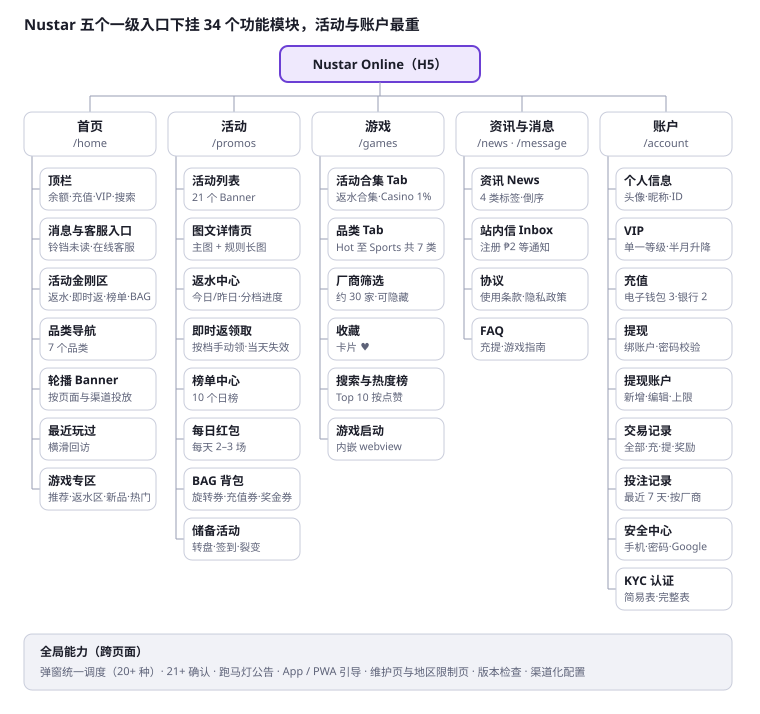

Nustar Online 平台功能梳理与分析
2026-09-30 首版 · 2026-10-02 更新 · Joshua
Nustar Online（nustargame.com）是宿务 NUSTAR 综合度假村旗下、面向菲律宾的移动端 H5 在线娱乐平台：5 个底部 Tab、7 个游戏品类、约 30 家厂商、17 个常驻活动，核心打法是“多层返水叠加 + 首充赠送 + 快速提现”。以下基于 2026-09-30 登录态实测（仅浏览，未发生充值、提现或下注）。第八至十一节的返利费率、活动规则与合规条款，取自活动规则图、平台接口返回的配置以及 Terms of Use / Privacy Policy / FAQ 原文。
功能模块结构树

交互版结构树见站点首页，点击任一模块可跳转到对应分析章节。
活动（8 个模块）和账户（9 个模块）是最重的两块；返水、榜单、红包、BAG 这些福利模块在首页金刚区和活动中心各有一个入口。三级细节见第八节逐项分析。
一、信息架构
竖屏 H5 单页应用，桌面端也以手机宽度居中显示；全站只有 5 个一级入口，钱包直接放在「账户」页，没有单独的充值页。
| 位置 | 入口 | 路由 | 功能 |
|---|---|---|---|
| 底部 Tab 1 | Home | /home | 首页聚合：活动入口、品类、Banner、游戏专区 |
| 底部 Tab 2 | Promos | /promos → /promos/promo_0?id= | 活动列表（纯图片 Banner）→ 活动详情（主图 + 规则） |
| 底部 Tab 3 | Games | /games | 游戏大厅：品类 Tab + 厂商筛选 + 收藏 |
| 底部 Tab 4 | News | /news | 品牌资讯（度假村、赛事、美食等） |
| 底部 Tab 5 | Account | /account | 个人信息、VIP 入口、余额、充值/提现 |
| 顶栏左 | 余额 + Deposit（登录后显示「免费 ₱8000」） | — | 余额展示，一键进充值 |
| 顶栏 | VIP 徽章 | /account/vip-introduction | VIP 权益与规则 |
| 顶栏右 | 搜索 | /gameRankList | 搜索框 + 游戏热度榜（按点赞数） |
| 顶栏右 | 铃铛（带未读红点） | /message | 站内信 Inbox |
| 顶栏右 | 耳机 | 未确认 | 在线客服（本次未能打开，见第十四节） |
| 账户页 | Accounts | /account/security-center | 安全中心 |
| 账户页 | My Wallets | /account/withdraw-account | 提现账户管理 |
| 账户页 | Bet Order | /account/bet-order | 投注记录 |
| 账户页 | Transactions | /account/transactions/Deposit | 资金流水 |
| 页脚 | Terms of use / Privacy Policy / FAQ | — | 协议与帮助 |
| 悬浮条 | Download NUSTAR App | appstore.nustargame.com | App 下载引导（下载送 ₱10） |
二、首页
首页是“活动优先、游戏其次”的布局：首屏上半部分全是返水和赠送入口，进入即连弹 5 个弹窗。
模块顺序（自上而下）
- 顶栏：余额、Deposit/免费 ₱8000、VIP、搜索、消息、客服
- 跑马灯公告：支付渠道维护通知（实测当天 QRPH 与 GCash 均在维护）
- 4 个活动快捷入口：1.5%+2% Cashback、2% Instant Return、Rank Cup（₱300,000）、BAG
- 7 个品类图标：Hot / Slots / Casino / Poker / Arcade / Bingo / Sports
- 轮播 Banner（约 7 张），左下角挂「首充 ₱8000 BONUS」角标，右下角挂活动悬浮球
- Recently Played：最近玩过（横滑）
- 游戏专区（均带 View All）：Nustar Recommends → 1.5%+2%+15% Slots RETURN → Exclusive & New → FC Combo Rank Win Daily → Casino 1.0% Cashback → Popular Games
- All Games 全量列表 + 底部厂商 Logo（DW / MW / WOW 等）
- 页脚：Terms of use / Privacy Policy / FAQ
- 常驻悬浮条：Download NUSTAR App for New Bonus and Fast Cash-Out
专区命名直接用活动名，把“玩哪个游戏能拿哪种返水”绑定在选游戏的动作上；游戏卡片左上角也直接标注「1.5%+2% Cashback / 15% Loss Rebate」或 HOT / EXCLUSIVE。
进入首页的弹窗链（关闭一个弹下一个）
| 顺序 | 弹窗 | 内容 | 主按钮 |
|---|---|---|---|
| 1 | 每日红包（Ang Pao） | 倒计时 + “₱10,000,000!”，提示“今天还剩 2 次机会”，右上角 ? 进规则 | 打开 |
| 2 | 首充额外奖励 | First Deposit Extra Bonus ₱8,000 | 立即存款 |
| 3 | Maximum Rewards | 每日叠加 5 项：+20% 充值加成、2% 即时返、1.5% 无限返水、15% 亏损返还、₱10m 红包 | Play Now |
| 4 | VIP 额外返水 | Casino / Slots 额外 0.2%，条件：投注 ₱20K + 所有 VIP | — |
| 5 | Evolution × PP | 真人最高 1% 无限返水 | — |
三、游戏大厅
大厅为「品类 Tab → 厂商筛选 Chip（含全部、收藏）→ 3 列游戏卡片」三层结构；老虎机厂商最多（约 24 家），体育只接 SABA 一家。品类 Tab 最前面还有两个活动型 Tab：「1.5%+2%+15% Return」与「Casino 1.0% Cashback」。
| 品类 | 厂商筛选项 | 代表游戏 |
|---|---|---|
| Hot | 跨品类热门 | Super Ace、Pinata Wins、Wild Bounty Showdown、Speed Baccarat A |
| Slots | JILI、PG、FC、5G、YB、OP、PP、JDB、MW、YGR、GG、BNG、PS、CQ9、SG、WOW、PT、KM、DW、NLC、Red Tiger、NetEnt、BTG、SNKY | Super Ace 系列、Fortune Gems 系列、Mahjong Ways 2、Gates of Olympus、Sweet Bonanza |
| Casino（真人） | Evolution、PP、SG、PT、DW | Speed / No Commission / Perya Speed Baccarat、Crazy Time、彩色游戏（Color Game） |
| Poker（棋牌） | JILI、PT、SG、PG、JDB、KM、CQ9、FC | Tongits Go、Pusoy Go、Tongits Pinoy、7up7down、骰宝、百家乐、21 点 |
| Arcade | JILI、JDB、FC、YB、CQ9、KM、MW、SG、PP、GG、PT、YGR、PS | Mines、Ocean King Jackpot、捕鱼类、Color Game |
| Bingo | JILI、YB、SG、Evolution、DW、WOW | Jackpot Bingo、Heat Bingo、iRich Bingo、Money Bingo、Super 30 Bingo（约 20 款） |
| Sports | SABA | SABA Sports（单入口） |
其他交互：
- 卡片角标：HOT / EXCLUSIVE / 活动返水标签，卡片右下角可收藏（♥）
- 搜索页默认展示热度榜 Top 10，按点赞数排序（Super Ace 804.9K 点赞居首，Pinata Wins 239.3K 第二）
- 本地化明显：Tongits、Pusoy、Perya、Color Game 都是菲律宾本地玩法
注：部分厂商名来自 Chrome 自动翻译后的页面（如 SG、KM、Red Tiger、NetEnt），为按原文推断的缩写，需对照英文页核实。
四、活动体系
Promos 页共 17 个活动，另有 1 个仅在弹窗出现（VIP 额外 0.2%）；返水/返还类共 5 个，是平台的主力留存手段；列表只有图片，点击进详情页（主图 + RULES 文字规则）。
| 类型 | 活动 | 要点 |
|---|---|---|
| 返水 | Slots Cashback | 2% 即时返 + 1.5% 无限返水 |
| 返水 | 15% Slots Loss Return | 老虎机亏损返还 15% |
| 返水 | Evolution × PP 1% Casino Cashback | 真人无限返水 1% |
| 返水 | Spark Game 1.0% Rebate | Color Game 返水 1%（SG 的 Bonus / Lucky Color Game，非 Bingo） |
| 返水 | VIP Casino/Slots Extra 0.2% | VIP 且投注 ₱20K 额外返 0.2%（弹窗活动） |
| 充值 | First Deposit ₱8,000 Bonus | 首充赠送，全站多处曝光 |
| 充值 | Deposit Boost +20% | 每天 12AM / 10AM / 6PM 三个时段充值加赠 20% |
| 榜单 | FC Daily Combo Rank | FC 厂商日榜，9/30–10/6 |
| 榜单 | VIP Bet Royale | ₱1,000,000 每日奖池 |
| 榜单 | Arcade Bet Leaderboard | 街机投注榜 |
| 榜单 | Poker Bet Leaderboard | 棋牌投注榜 |
| 厂商联运 | PP Daily Wins | ₱435,000,000 奖池，至 2027-03-28 |
| 厂商联运 | PS Jackpot | 奖池游戏推广 |
| 厂商联运 | Evolution Perya Fiesta | ₱420 Million 奖池 |
| 厂商联运 | SABA PBA & WNBA | 每天额外 ₱1,000 |
| 随机福利 | Daily Lucky Surprise（Ang Pao） | 每日随机时间发红包，金额随机，1 倍流水可提 |
| 服务承诺 | Delayed Withdrawal 100% Compensation | 提现超时 >10 分钟赔 ₱10，7 天周期上限 ₱50，3 倍流水；需有充值记录、未被人工审核、仅限 GCash/Maya |
| 拉新/下载 | Download the App | 下载 App 送 ₱10 |
设计特点：
- 返水可叠加，并用「Stack 5 Daily」弹窗把 5 项打包宣传
- 流水要求极低（红包 1 倍、提现补偿 3 倍），靠“小额高频”维持活跃
- 提现补偿把“10 分钟到账”做成可量化承诺，是信任度卖点
- 每条规则末尾都有“平台保留修改、最终解释权”条款
五、充值与提现
充值和提现都嵌在 Account 页的余额卡片下方，用 Deposit / Withdrawal 两个 Tab 切换；充值每一档都直接标出赠送金额。
充值渠道
| 分组 | 渠道 | 说明 |
|---|---|---|
| E-Wallet (3) | GCash（默认选中）、Maya、QRPH | 实测当天 GCash、QRPH 在维护 |
| Bank | InstaPay | ≤ ₱50,000，即时到账 |
| Bank | PESONet | 大额，次日到账 |
充值档位与赠送（₱）
| 充值 | 10 | 20 | 50 | 100 | 200 | 500 | 1,000 | 5,000 | 50,000 |
|---|---|---|---|---|---|---|---|---|---|
| 赠送 | +5 | +5 | +10 | +10 | +40 | +40 | +150 | +300 | +1,000 |
底部固定栏显示 Total（₱）、Rewards 按钮和 Continue。最低充值 ₱10，小档赠送比例最高（充 10 送 5 = 50%），明显在降低首充门槛。
提现
- 先「Add Withdrawal Account」绑定提现账户（My Wallets 页管理）
- 快捷档位：100 / 200 / 500 / 1,000 / 5,000 / 10,000，或手动输入 ₱100–100,000
- 宣传「10 分钟到账」，超时按「Delayed Withdrawal」活动补偿
资金记录：Transactions 分 All / Deposit / Withdrawal / Reward 四个 Tab；Bet Order 可按 Today / Yesterday / Last 3 days / Last 7 days 和厂商筛选。
六、账户、安全中心与 VIP
账户体系轻量：支持 Google 账号关联登录，手机号、登录密码、KYC 都可后补；VIP 只有一级，按半月流水自动升降。
个人页头部：头像、昵称、脱敏 ID（可复制）、编辑入口、「How To Become VIP?」横条，下方 4 宫格：Accounts / My Wallets / Bet Order / Transactions。
安全中心（/account/security-center）
| 分组 | 项目 | 实测状态 |
|---|---|---|
| General Setting | 手机号 | 未设置 |
| General Setting | 登录密码 | 未设置 |
| General Setting | KYC 验证 | 未验证 |
| Link | 关联 Google | 已关联 |
| Account Operation | 退出登录 | — |
| 其他 | 版本号 2.6.1.2、使用条款、隐私政策 | — |
VIP 规则
- 门槛：半月内（1–15 日、16 日–月底）累计投注 > ₱300,000
- 每月 1 日和 16 日自动升级，未达标自动降级
- 权益：最高 1.0% 返水（Slots / Poker / Arcade / Bingo / Sports 1.0%，Casino 0.8%）、Maya 钱包月限额提升至 ₱5,000,000、专属客服、优先提现
- 页面底部展示 PAGCOR 牌照与 21+ 年龄标识
观察：VIP 权益文案有复制粘贴痕迹（“专属客服”“优先提现”的描述与“最高返水”完全相同），没有等级阶梯和进度条。
七、消息与资讯
消息用于运营触达，资讯用于品牌背书，两者分开。
- Inbox（/message）：站内信列表，顶栏铃铛带未读数。注册欢迎信内容：赠送 ₱2 体验金，强调 PAGCOR 持牌、最高返水、“10 分钟提现”。
- News（/news）：图文列表，按日期倒序，标签为 About Us / Events / Seasonal / Promotion。内容多是 NUSTAR 宿务度假村的餐饮、酒店获奖、高尔夫赛、NUSTAR Run、购物抽奖等线下活动，更新频率约每周 1–2 篇。
- 全局公告：首页 / 大厅顶部跑马灯，实测内容是支付渠道维护通知。
资讯频道的作用是把线上平台和线下持牌度假村绑在一起，增加“正规、可信”的感知。
八、模块逐项深度分析
按结构树中的模块逐个拆开：每个模块写功能点、实际交互逻辑、设计意图和问题/机会。除页面实测外，还参考了前端路由表与接口返回的配置（如 roadshow 模块开关）。
8.1 首页
| 模块 | 功能与逻辑 | 设计意图 | 问题 / 机会 |
|---|---|---|---|
| 顶栏 | 余额 + 刷新；未首充时 Deposit 按钮变为「Free ₱8000」（配置 not_deposit_attract_number）；VIP 徽章、搜索、消息（未读数）、客服 | 永远把“充值”放在视线起点 | “₱8000”门槛不透明 |
| 跑马灯 | 后台配置（marquee/list），用于渠道维护、活动播报 | 实时运营告知 | 维护通知长期占位会削弱信任 |
| 活动金刚区 | 4 格：Cashback（返水中心）、Instant Return、Rank Cup（榜单中心）、BAG（道具背包，带未读数）；由 activity-kong/list 配置 | 高频福利入口前置 | 位置好，可以借鉴 |
| 品类导航 | Hot / Slots / Casino / Poker / Arcade / Bingo / Sports，点击进大厅对应 Tab | 首页与大厅共用一套分类 | — |
| 轮播 Banner | banner/activity/list 下发，按 page（Home / Promo / Login）与渠道（Web / iOS / Google / 小米等）分别投放，有起止时间 | 按渠道精准投放 | 渠道化配置值得借鉴 |
| 最近玩过 | 按用户历史横滑 | 缩短回访路径 | — |
| 游戏专区 | Recommends、返水专区、Exclusive & New、FC Combo、Casino 1%、Popular、All Games；roadshow 开关还包含 liveGame、justForYou、Top10Ranking、CasinoRanking、JILIRanking、Spin、FirstDeposit 等模块 | 按活动组织游戏，把返水写进选游戏决策 | 信息密度高，新用户难以找到自己想玩的 |
| 弹窗系统 | autoPopMgr 统一调度 20+ 种弹窗：21+ 确认、VIP、红包、注册奖励、榜单、弹窗 Banner、转盘、App 下载、PWA 安装、KYC 提示、签到、BAG、限时抢购（flash sale）等；弹窗 Banner 有 show_count（如 Max Rewards 最多弹 5 次） | 最大化活动曝光 | 实测连弹 5 个，体验差；但“统一调度 + 次数限制”的架构值得借鉴 |
| App / PWA 引导 | 底部常驻下载条，跳 appstore.nustargame.com；另有 PWA 安装引导与 Safari 指引页 | H5 → App 转化，提升留存 | — |
8.2 游戏
| 模块 | 功能与逻辑 | 设计意图 | 问题 / 机会 |
|---|---|---|---|
| 游戏大厅 | 品类 Tab → 厂商 Chip（含全部、收藏）→ 3 列卡片；前两个 Tab 是活动合集（Slots Return、Casino 1%）；配置 hideProviders 可隐藏厂商 | 品类 × 厂商双维筛选 | 缺少排序（热度/新品/RTP）和按玩法筛选 |
| 游戏卡片 | 角标：HOT / EXCLUSIVE / 返水标签（1.5%+2% Cashback、15% 或 6% Loss Rebate）；♥ 收藏 | 选游戏时就看到能拿多少返水 | 值得借鉴 |
| 搜索 / 热度榜 | /gameRankList：搜索框 + Top 10（按点赞数） | 用社交证明引导选游戏 | 点赞数字来源不明 |
| 游戏启动 | /game-webview 内嵌打开（本次未启动游戏） | 不离开平台 | 待实测 |
| 厂商返水体系 | JILI 有独立返水显示开关（jili_rebate_show_switch）与 jili/backhall 接口 | 厂商级运营 | — |
8.3 活动中心
| 模块 | 功能与逻辑 | 设计意图 | 问题 / 机会 |
|---|---|---|---|
| 活动列表 | 纯图 Banner；点击按 jump_type 分流：7 = 图文详情页（标题图 + 规则长图），4 = 活动功能页（返水中心、榜单中心），8 = 直达游戏 | 运营可快速上新 | 规则是图片，不可搜索、不可翻译、不利于无障碍 |
| 返水中心 /promos/promo_3 | Today / Yesterday；Total Bonus；按合集和品类显示当前投注、当前费率、下一档费率；右上角显示用户返水徽章（如 VIP 1.5%）；每 10 分钟更新 | “进度可见”刺激凑档 | 设计优秀 |
| 即时返页 | 按档位手动领取，当天失效 | 制造每日回访 | 漏领易引发投诉 |
| 榜单中心 /customList | 8 个榜单 Tab；倒计时；Previous / Current；前三领奖台 + 列表 + 底部固定“我的名次”；? 进规则详情 | 竞争激励大额用户 | 实测部分榜单详情页加载失败 |
| 红包 | 弹窗倒计时 + 打开；每天 3 场，按场次设投注/充值门槛；有结果页与详情页（/angpaoResult、/angpaoDetail） | 定时召回 | — |
| BAG 背包 | 统一存放免费旋转券、充值券、奖金券；券有倒计时；充值时可选券 | 所有券类福利的基建 | 值得借鉴 |
| 转盘 / 签到 / 裂变 | 接口有 spin/config（剩余 5 次）、checkin（当前未绑定签到活动）；路由还有 /fission（邀请裂变）、/vote、/goldenWeek | 活动能力储备，按需开启 | 本次前端未露出入口 |
8.4 账户与钱包
| 模块 | 功能与逻辑 | 设计意图 | 问题 / 机会 |
|---|---|---|---|
| 充值 | 电子钱包 / 银行两组；档位按钮标出首充赠送；可选充值券（BAG）；底栏 Total + Rewards + Continue；有 KYC 拦截弹窗、充值超时、各渠道最小/最大额 | 减少跳转，赠送前置 | — |
| 提现 | 先绑定提现账户；档位 + 手输 ₱100–100,000；前置校验（登录密码、提现密码、KYC）；有风控提现信息和 On Time Care 请求号 | 安全与风控 | — |
| 提现账户 | 列表、新增、编辑，有账户数量上限 | 限制多卡套现 | — |
| 交易记录 | All / Deposit / Withdrawal / Reward；有详情页与合并列表 | 资金透明 | — |
| 投注记录 | Today / Yesterday / 3 天 / 7 天 + 厂商筛选；有注单详情 | — | 只能查 7 天 |
| 安全中心 | 手机、登录密码、KYC、Google 关联、退出、版本号 | — | 无负责任博彩限额设置 |
| KYC | 简易表 / 完整表 / 详情 / 成功页；注册宽限期内可先玩 | 降低注册流失 | — |
| VIP | 单一等级，半月升降；权益页 | — | 无阶梯、无进度 |
| 头像 / 昵称 | 设置头像页 | — | — |
8.5 内容与系统
| 模块 | 功能与逻辑 | 问题 / 机会 |
|---|---|---|
| 站内信 | 列表 + 详情，未读红点 | — |
| 资讯 | 列表 + 详情，分标签，有未读标记 | — |
| 协议 / FAQ | Terms of Use、Privacy Policy、FAQ（含充提、老虎机、Bingo 指南） | FAQ 邮箱拼写错误（见第十一节） |
| 系统页 | 维护页、地区限制页（/system/restricted）、版本检查（每 180 秒） | — |
| 客服 | 顶栏入口 + FAQ 写“24/7、在线聊天” | 本次未打开 |
九、返利 / 奖励 / 返水 / 返金专题
Nustar 的返利是四层叠加：日返水（按投注）+ 即时返（按投注 + 充值门槛）+ 亏损返还（按净输）+ VIP 直升最高档。同一笔老虎机投注最多可同时拿到前三层，这就是游戏卡片上「1.5% + 2% + 6%/15%」角标的含义。以下数值来自活动规则图和平台接口返回的配置（cashback/detail、first-recharge rule），标注“推断”的为规则未写明、按常见做法理解的部分。
9.1 日返水（1.5% Unlimited Cashback）
规则要点
- 统计周期：每天 00:00:00–23:59:59（GMT+8）的有效投注（valid bets）
- 发放：次日 16:00 前自动到账；当日返水合计 < ₱1 不发
- 提现条件：返水金额 1 倍流水
- 页面（/promos/promo_3）按 Today / Yesterday 展示，数据每 10 分钟更新；每个品类显示当前投注、当前费率和“下一档”费率
- 对冲下注（百家乐庄闲同押、龙虎同押等）不计入，发现可取消资格、审核或拒绝提现、封号
费率表（普通会员按当日累计投注分档；VIP 不论投注额直接享最高档）
| 当日投注（₱） | 指定老虎机（60 款） | 非指定老虎机 | Casino | Poker / Arcade / Bingo / Sports |
|---|---|---|---|---|
| 1 – 999.99 | 1.5% | 1.0% | 0.30% | 0.30% |
| 1,000 – 4,999.99 | 1.5% | 1.0% | 0.45% | 0.45% |
| 5,000 – 49,999.99 | 1.5% | 1.0% | 0.60% | 0.60% |
| 50,000 – 99,999.99 | 1.5% | 1.0% | 0.70% | 0.70% |
| ≥ 100,000 | 1.5% | 1.0% | 0.80% | 1.00% |
| VIP（全部投注） | 1.5% | 1.0% | 0.80% | 1.00% |
另有两个“游戏合集”费率，覆盖对应品类的基础费率：CASINO 1%（37 款 Evolution / PP 真人桌，如 Speed Baccarat A、No Commission Baccarat、Crazy Time）固定 1%；SPARK GAME 1%（SG 的 Bonus Color Game、Lucky Color Game）固定 1%。Spark 规则写明“不可与其他返水叠加，只取较高者”，即同一笔投注取 max(合集费率, 品类费率)。
计算逻辑
\text{Cashback}_{day} = \sum_{\text{categories}} \text{ValidBet}_{c} \times \max(\text{CollectionRate}, \text{TierRate}_{c}(\text{DailyBet}_c))
分档按品类当日累计投注定档，并对该品类当日全额适用同一费率（推断：规则表头为 Daily Bet Amount，页面按品类展示“下一档”）。
示例（普通会员，同一天）
| 投注 | 适用费率 | 返水 |
|---|---|---|
| Super Ace（指定老虎机）₱2,000 | 1.5% | ₱30.00 |
| 非指定老虎机 ₱1,000 | 1.0% | ₱10.00 |
| Speed Baccarat A（CASINO 1% 合集）₱3,000 | max(1%, 0.45%) = 1% | ₱30.00 |
| Poker（Tongits Go）₱800 | 0.30%（未到 ₱1,000 档） | ₱2.40 |
| 合计 | — | ₱72.40，次日 16:00 前到账，需 ₱72.40 流水后可提 |
同样的 Poker 投注若加到 ₱1,000，整档升到 0.45%，返水从 ₱2.40 变为 ₱4.50；档位设计在鼓励用户“凑档”。若当天只在 Arcade 投 ₱200，返水 ₱0.60 < ₱1，不发放。
9.2 即时返（2% Instant Return，仅指定老虎机）
规则要点
- 按当日指定老虎机投注额 + 当日充值额双门槛解锁，阶梯逐级领取
- 必须在活动页手动领取，且当天 23:59:59 前领，过期作废
- 1 倍流水
| 指定老虎机投注（₱） | 当日充值（₱） | 本档奖励（₱） | 累计奖励（₱） | 累计 / 投注 |
|---|---|---|---|---|
| 50 | 10 | 1 | 1 | 2.0% |
| 500 | 100 | 7 | 8 | 1.6% |
| 5,000 | 1,000 | 72 | 80 | 1.6% |
| 50,000 | 10,000 | 720 | 800 | 1.6% |
| 200,000 | 20,000 | 2,400 | 3,200 | 1.6% |
| 500,000 | 20,000 | 4,800 | 8,000 | 1.6% |
| 2,000,000 | 20,000 | 24,000 | 32,000 | 1.6% |
| 5,000,000 | 20,000 | 48,000 | 80,000 | 1.6% |
| 10,000,000 | 20,000 | 80,000 | 160,000 | 1.6% |
宣传是 “2%”，但只有第一档（投 ₱50）是 2%，其余累计比例都是 1.6%，而且不在档位点上时更低。充值门槛在 ₱20,000 封顶，大额玩家靠投注解锁。
示例：当天充值 ₱1,000、在 Super Ace 投注 ₱8,000 → 解锁前三档，可领 ₱1 + ₱7 + ₱72 = ₱80（实际 1.0%）；即使投注到 ₱49,999 也还是 ₱80，要到 ₱50,000 投注 + ₱10,000 充值才到下一档。忘记当天点领取则一分没有。
9.3 亏损返还（15% Slots Loss Return）
规则要点
- 对象：普通与 VIP 均可，需有过至少 ₱100 的充值
- 费率：JILI Super Ace、PG Pinata Wins 15%；其他指定老虎机 6%
- 净输赢按天（00:00–23:59:59 GMT+8）计算，当天收到的各类奖金不计入；只有当天净输才返
- 上限 ₱100 / 天；< ₱1 不发；次日 16:00 前到账；1 倍流水
\text{LossReturn} = \min(\ 100,\ \text{NetLoss}_{15\%\ games} \times 15\% + \text{NetLoss}_{6\%\ games} \times 6\%\ )
| 场景 | 计算 | 到账 |
|---|---|---|
| Super Ace 当天净输 ₱500 | 500 × 15% = 75 | ₱75 |
| Super Ace 当天净输 ₱2,000 | 2,000 × 15% = 300 → 封顶 | ₱100 |
| Fortune Gems 3 当天净输 ₱1,000 | 1,000 × 6% = 60 | ₱60 |
| 当天净赢 | — | ₱0 |
封顶点：15% 游戏净输 ≈ ₱667、6% 游戏净输 ≈ ₱1,667 就到 ₱100 上限，超过部分不再返。“15%”实际只对小额亏损有效。多款游戏混合时是按游戏分别算净输还是整体净输后分摊，规则未写明。
9.4 同一笔老虎机投注的叠加效果
普通会员当天充值 ₱1,000、只玩 Super Ace、投注 ₱5,000、净输 ₱600：
| 层 | 计算 | 金额 |
|---|---|---|
| 日返水 1.5% | 5,000 × 1.5% | ₱75 |
| 即时返（需当天手动领） | 前三档累计 | ₱80 |
| 亏损返还 15% | min(100, 600 × 15%) | ₱90 |
| 合计 | — | ₱245（投注额的 4.9%，净输的 41%），均为 1 倍流水 |
9.5 VIP 返水与额外加成
- VIP 所有品类直接享受表中最高档（Casino 0.8%、其他 1.0%、指定老虎机 1.5%），不需要当天打到 ₱100,000。对大额用户的实际差别是“不用凑档”；例：VIP 当天在 Poker 投 ₱2,000 拿 ₱20（1%），普通会员只拿 ₱9（0.45%）。
- 弹窗另宣传 Casino / Slots 额外 0.2%（条件：所有 VIP + 投注 ₱20K），其完整规则未在 Promos 页出现，待确认。
9.6 各类奖励的流水倍数总览
| 流水倍数 | 适用奖励 |
|---|---|
| 0 倍（直接现金） | PP Daily Wins 周转盘奖金 |
| 1 倍 | 日返水、即时返、亏损返还、Casino 1%、Spark 1%、每日红包、VIP Bet Royale、SABA 篮球加赠 |
| 3 倍 | 提现超时补偿（On Time Care） |
| 5 倍 | 首充奖励 |
| 20 倍 | Deposit Boost +20% 充值加赠券 |
规律：按行为返还的（投注、亏损）流水低，按充值赠送的流水高。前者已经以投注为前提，套利空间小；后者是“白送”的钱，靠高流水拉回。
9.7 全活动返利百分比与返利逻辑总表
把平台全部带返利性质的活动放在同一口径下对比：名义比例是宣传或规则写的数字，实际有效比例是套上门槛、分档和封顶后，用户真正拿到的金额占返利基数的比例区间。数据来自活动规则图与平台接口配置（截至 2026-10-01）。
A. 按投注返利（返水类）
| 活动 | 返利基数 | 名义比例 | 实际有效比例 | 门槛 / 上限 | 计算与发放逻辑 | 流水 |
|---|---|---|---|---|---|---|
| 日返水·指定老虎机（60 款） | 当日有效投注 | 1.5% | 1.5%（固定） | 当日返水合计 ≥ ₱1；无上限 | 投注 × 1.5%，次日 16:00 前自动到账 | 1 倍 |
| 日返水·非指定老虎机 | 当日有效投注 | 1.0% | 1.0%（固定） | 同上 | 同上 | 1 倍 |
| 日返水·Poker / Arcade / Bingo / Sports | 当日该品类投注 | 最高 1.0% | 0.30% – 1.00% | 分 5 档：₱1 / 1,000 / 5,000 / 50,000 / 100,000 | 按当日累计投注落档，整档费率乘全额 | 1 倍 |
| 日返水·Casino（非合集桌） | 当日真人投注 | 最高 0.8% | 0.30% – 0.80% | 同上 5 档 | 同上 | 1 倍 |
| CASINO 1% 合集（37 桌） | 当日在合集桌的投注 | 1.0% | 1.0% | 与品类费率取高者，不叠加 | 投注 × max(1%, 分档费率) | 1 倍 |
| Spark Game 1%（Color Game 2 款） | 当日投注 | 1.0% | 1.0% | 同上，取高不叠加 | 同上 | 1 倍 |
| VIP 返水 | 当日投注 | 最高 1.0% | 直接按最高档：Casino 0.8%、其他 1.0%、指定老虎机 1.5% | 半月投注 > ₱300,000 得 VIP | 不用凑档 | 1 倍 |
| VIP 额外返水 | Casino / Slots 投注 | +0.2% | 规则未公布 | 弹窗写“所有 VIP + 投注 ₱20K” | 待确认 | 待确认 |
| 即时返（2% Instant Return） | 当日指定老虎机投注 + 当日充值 | 2% | 0.16% – 2.0%（档位点上 1.6%） | 9 档逐级解锁；单日最高 ₱160,000 | 解锁档位奖金累加；当天 23:59 前手动领，否则作废 | 1 倍 |
即时返 0.16% 的例子：充 ₱10,000、投 ₱49,999 只解锁到第 3 档（累计 ₱80），80 ÷ 49,999 = 0.16%；再投 ₱1 到 ₱50,000 就解锁第 4 档（累计 ₱800），变成 1.6%。所以即时返是一条阶梯形曲线，只有恰好踩在档位点上才接近宣传比例。
B. 按亏损返利
| 活动 | 返利基数 | 名义比例 | 实际有效比例（占净输） | 门槛 / 上限 | 逻辑 | 流水 |
|---|---|---|---|---|---|---|
| 15% Slots Loss Return | 当日在指定老虎机的净输（不含当天收到的奖金） | Super Ace、Pinata Wins 15%；其他指定老虎机 6% | 净输 ≤ ₱667 时 15%；净输 ₱5,000 时 2%；₱10,000 时 1% | 需有 ≥ ₱100 充值；每天封顶 ₱100；< ₱1 不发 | min(100, 净输 × 费率)；次日 16:00 前自动到账 | 1 倍 |
封顶让它变成“小额保险”：对单日输 ₱600 以内的用户是实打实的 15%，对大额用户几乎可以忽略。
C. 按充值返利
| 活动 | 返利基数 | 名义比例 | 实际有效比例（占充值） | 门槛 / 上限 | 逻辑 | 流水 |
|---|---|---|---|---|---|---|
| 首充奖励 | 首笔充值 | “最高 ₱8,000” | 50% → 0.25%：₱10 得 ₱5（50%）、₱200 得 ₱40（20%）、₱1,000 得 ₱150（15%）、₱5,000 得 ₱300（6%）、₱399,999 得 ₱1,000（0.25%）、₱400,000 得 ₱8,000（2%） | 8 个金额区间，固定奖金 | 按区间发固定金额，区间内充得越多比例越低；充值成功即到账 | 5 倍 |
| Deposit Boost +20% | 单笔充值 | 20% | 12AM / 10AM：₱400–500 为 20%，₱1,000 为 10%；6PM：₱1,000–2,500 为 20%，₱5,000 为 10% | 限量抢券；12AM / 10AM 最低 ₱400、封顶 ₱100；6PM 最低 ₱1,000、封顶 ₱500；券 2 小时过期 | min(充值 × 20%, 封顶) | 20 倍 |
| Daily Lucky Surprise 充值券 | 下一笔合格充值 | 随机 | 规则图示例：充 ₱5,000 加 ₱250（5%） | 登录随机获得，有过期时间 | 充值页选券使用 | 未公布 |
| 每日红包 | 无固定基数 | 随机金额 | 无法计算比例 | 3 场；第 2 场需当日投注与充值 ≥ ₱10，第 3 场 ≥ ₱50；每日限次 | 打开随机金额 | 1 倍 |
D. 竞赛 / 抽奖 / 服务类
| 活动 | 返利形式 | 比例或金额 | 逻辑 | 流水 |
|---|---|---|---|---|
| VIP Bet Royale | 日榜奖金 | 第 1 名占奖池 30%，前 3 名合计 60% | 按全平台投注额排名（不含 Poker），前 20 名，₱1,000,000 / 天 | 1 倍 |
| NS 500 | 日榜奖金 | 第 1 名 ₱50,000（25%），第 401–500 名 ₱50 | 按净赢额排名，前 500 名，₱200,000 / 天，每周四–五 | 3 倍 |
| FC Combo | 日榜奖金 + 免费旋转 | 第 1 名 ₱80,000，第 501–1,000 名 ₱35 免费旋转 | 按 COMBO 次数排名，单注 ≥ ₱4，与注额无关 | 未写明 |
| 厂商榜（JILI / PG / FC / PP / YB / OP / Arcade / Poker） | 日榜奖金 | 每日奖池 ₱12,400 – ₱142,500 | 按厂商或品类投注排名（推断） | 1 倍（推断） |
| PP Daily Wins | 按注额倍数发奖 | ×5 – ×500；注额按最高 ₱29 计，单人最高 ₱14,500 | 按单次最大赢分倍数排名，20:00–02:00 | 推断为现金 |
| PP 周转盘 | 随机奖品 | ₱29,000 / ₱14,500 / 免费旋转 | 任意投注掉碎片，集 3 片转一次 | 0 倍 |
| Evolution Perya Fiesta | Reward Game 下注额 | 最高可赢 = 下注额的 20% | 周抽奖，奖品以 5 倍预期奖金的下注额发放 | 由 Evolution 规则决定 |
| PS Jackpot | 奖池 | 未公布 | 4 级奖池，注越大概率越高 | 未公布 |
| SABA PBA × WNBA | 加赠 | 注额的 100% | 全场独赢且所选队赢球并投进第一球；每联赛每天封顶 ₱500 | 1 倍 |
| 提现超时补偿 | 固定金额 | ₱10 / 次，7 天封顶 ₱50 | 处理超 10 分钟；仅 GCash / Maya；人工审核不赔 | 3 倍 |
| 注册 / 下载 | 固定金额 | 注册站内信 ₱2；App 下载 ₱10；注册送 ₱10（登录页 Banner，规则未展开） | 一次性 | 未公布 |
| 邀请宝箱 | 宝箱奖金 | 未公布（活动已下线） | 好友助力 + 充值加速 | 未公布 |
9.8 扣除流水成本后的真实价值（估算）
同样是 ₱100 的奖励，流水倍数不同，对用户的真实价值差别很大：完成流水要继续下注，而每注都有庄家优势。下表按通用公式估算，庄家优势为行业常见假设（老虎机 RTP 约 96.5%，即优势 3.5%；百家乐约 1.2%），不是 Nustar 公布的数据。
\text{真实价值} \approx \text{奖励} - \text{流水倍数} \times \text{流水基数} \times \text{庄家优势}
| 流水倍数（仅按奖励计） | 对应活动 | 玩老虎机完成时的真实价值 | 玩百家乐完成时的真实价值 |
|---|---|---|---|
| 0 倍 | PP 周转盘 | 100% | 100% |
| 1 倍 | 日返水、即时返、亏损返还、红包、VIP 榜、SABA | 约 96.5% | 约 98.8% |
| 3 倍 | NS 500、提现超时补偿 | 约 89.5% | 约 96.4% |
| 5 倍 | 首充奖励 | 约 82.5% | 约 94.0% |
| 20 倍 | Deposit Boost | 约 30% | 约 76% |
如果流水基数是“充值 + 奖励”，高倍数奖励的价值会变成负数。两个例子：
- 首充 ₱1,000 得 ₱150（5 倍）：按奖励计需投 ₱750，预期损耗约 ₱26，剩 ₱124；按“充值 + 奖励”计需投 ₱5,750，老虎机预期损耗约 ₱201，已经超过 ₱150 的奖励
- 6PM Deposit Boost 充 ₱2,500 得 ₱500（20 倍）：按奖励计需投 ₱10,000，老虎机预期损耗约 ₱350，剩 ₱150；按“充值 + 奖励”计需投 ₱60,000，预期损耗约 ₱2,100
结论：1 倍流水的返水类奖励基本等于现金；5 倍、尤其 20 倍的充值赠送主要作用是把资金留在平台内继续下注。流水基数规则写的是“在提现页查看”，这一点直接决定了充值类奖励是正价值还是负价值，仍待实测。注意：用百家乐刷流水时，对冲下注是被明确禁止的（见 11.6）。
9.9 三类典型用户的综合返利模拟
把同一天可以同时拿到的返利叠加计算（不含随机红包、榜单等不确定收入），看平台对不同用户实际让利多少。
用户 A：新用户小额——首充 ₱200，当天在 Super Ace 投注 ₱1,000，净输 ₱150
| 返利层 | 计算 | 金额（₱） |
|---|---|---|
| 首充奖励（5 倍流水） | ₱200 档 | 40 |
| 日返水 | 1,000 × 1.5% | 15 |
| 即时返 | 充 200 / 投 1,000 → 第 1–2 档 | 8 |
| 亏损返还 | 150 × 15% | 22.5 |
| 合计 | — | 85.5（投注的 8.6%、充值的 43%） |
用户 B：普通中额——当天用 6PM 加赠券充 ₱5,000；指定老虎机投 ₱30,000（净输 ₱2,000，均在 6% 游戏），CASINO 1% 合集桌投 ₱20,000
| 返利层 | 计算 | 金额（₱） |
|---|---|---|
| Deposit Boost（20 倍流水） | min(5,000 × 20%, 500) | 500 |
| 日返水 | 30,000 × 1.5% + 20,000 × 1% | 650 |
| 即时返 | 充 5,000 / 投 30,000 → 第 1–3 档 | 80 |
| 亏损返还 | min(100, 2,000 × 6%) | 100 |
| 合计 | — | 1,330（投注的 2.7%；不含加赠券为 1.7%） |
用户 C：VIP 大额——当天充 ₱50,000；指定老虎机投 ₱600,000，非合集真人桌投 ₱400,000
| 返利层 | 计算 | 金额（₱） |
|---|---|---|
| 日返水 | 600,000 × 1.5% + 400,000 × 0.8%（VIP 最高档） | 12,200 |
| 即时返 | 充 50,000 / 投 600,000 → 第 1–6 档 | 8,000 |
| 亏损返还 | 封顶 | ≤ 100 |
| VIP Bet Royale | 当天总投注 ₱1,000,000，若进前 20 名 | ₱5,000 – 300,000（不确定） |
| 合计（不含榜单） | — | 约 20,300（投注的 2.0%） |
观察
- 小额新用户的返利率最高（8.6%），主要来自一次性首充奖励和未封顶的亏损返还；这是拉新成本
- 持续性返利（日返水 + 即时返）在指定老虎机上最高约 1.5% + 1.6% = 3.1% 的投注额，已接近老虎机常见庄家优势（约 3–4%）；平台靠“仅限指定游戏”“充值门槛”“当天手动领”“封顶 ₱100”来控制实际支出
- 大额用户按比例拿得少（约 2%），平台用榜单的高额奖金（前 3 名占 60%）来弥补对大额用户的吸引力
- 对 789Bingo：设计返利时先算 Bingo 游戏的庄家优势，把“持续性返利上限”控制在优势以内，并让一次性拉新奖励单独计入获客成本
十、活动深度分析
按接口配置，平台当前共上线 21 个活动 Banner（含登录页、首页专用位），其中返水类已在第九节展开，这里逐一拆解其余活动。每个活动均有“平台保留修改、暂停、取消及最终解释权”条款，下文不再重复。
10.1 首充奖励（Deposit and get up to ₱8,000）
活动期 2026-04-08 至 2027-12-31，仅限账号第一笔充值，充值成功即自动发放，流水 5 倍。
| 首充金额（₱） | 奖励（₱） | 奖励比例（按区间下限） |
|---|---|---|
| 10 – 49.99 | 5 | 50% |
| 50 – 99.99 | 10 | 20% |
| 100 – 199.99 | 10 | 10% |
| 200 – 999.99 | 40 | 20% |
| 1,000 – 4,999.99 | 150 | 15% |
| 5,000 – 49,999.99 | 300 | 6% |
| 50,000 – 399,999.99 | 1,000 | 2% |
| ≥ 400,000 | 8,000 | 2% |
注意点：
- 全站反复曝光的“Free ₱8000”要首充 ₱400,000 才能拿到；对绝大多数用户，实际是 ₱5–₱150
- 最划算的是 ₱10（50%）和 ₱200（20%）档；充 ₱199 只拿 ₱10，充 ₱200 拿 ₱40，档位边界效应明显
- 5 倍流水是按奖励还是按“本金 + 奖励”计算，规则只写“在提现页查看”。例：首充 ₱1,000 拿 ₱150，按奖励计需投 ₱750，按本金 + 奖励计需投 ₱5,750
- 同样适用对冲禁止条款
- 首充前账户有 ₱2 注册体验金（站内信发放）
10.2 Deposit Boost +20%（定时抢充值加赠券）
活动期 2026-08-18 至 2026-12-31。每天 3 个时点限量放券，先到先得。
| 放券时间 | 最低充值 | 加赠 | 上限 | 充多少最划算 |
|---|---|---|---|---|
| 12:00 AM | ₱400 | +20% | ₱100 | ₱500 |
| 10:00 AM | ₱400 | +20% | ₱100 | ₱500 |
| 6:00 PM | ₱1,000 | +20% | ₱500 | ₱2,500 |
规则：券抢到后 2 小时内有效，过期不补；所有加赠 20 倍流水。领取路径：首页弹出 Limited Offer 倒计时 → Claim Now → 券进入 BAG → 充值页选券 → 底部显示 +₱加赠 → Continue。
示例：6PM 抢到券后充 ₱2,500 → 加赠 ₱500；若流水按加赠计，需投注 ₱10,000。充 ₱5,000 仍只有 ₱500（实际 10%）。
10.3 每日红包（Daily Ang Pao Rush）
首页弹窗展示倒计时和“₱10,000,000!”奖池，每天有限次数（实测“今天还剩 2 次”）。接口返回每天 3 场（GMT+8）：
| 场次 | 时间 | 参与门槛（推断：接口金额以分为单位） |
|---|---|---|
| 1 | 11:00 – 14:00 | 无 |
| 2 | 15:00 – 18:00 | 当天投注 ≥ ₱10 且充值 ≥ ₱10 |
| 3 | 19:00 – 23:59 | 当天投注 ≥ ₱50 且充值 ≥ ₱50 |
规则：新老会员均可；红包数量有限，随机时间放出；金额随机；1 倍流水（拿 ₱100 需先投 ₱100）。第一场零门槛用来拉登录，后两场用小额充值/投注门槛引导用户首充。
10.4 Daily Lucky Surprise（登录送券 + BAG 道具背包）
活动期 2026-09-16 至 2026-12-31。每天登录有机会获得随机奖励，放入首页「BAG」：
- Free Spin Voucher：指定游戏免费旋转
- Deposit Voucher：下一笔合格充值额外加赠（如“Deposit EXTRA ₱250”，示例为充 ₱5,000 得 ₱5.2K）
- Credit Voucher：直接加奖金
- 券有倒计时，过期失效；BAG 分 All / Deposit 两个 Tab
BAG 是所有券类奖励的统一容器（Deposit Boost 券也在这里），是这套活动体系的关键基建。
10.5 榜单类（Rank Cup / Leaderboard）
入口：首页 Rank Cup → /customList，顶部 8 个榜单 Tab，可看 Previous / Current 和“我的名次”。所有榜单每日重置、不累计，同分先达成者排前，次日 16:00 前发奖。
| 榜单 | 每日奖池（₱） | 排名依据 | 活动期 |
|---|---|---|---|
| VIP Bet Royale | 1,000,000 | 全平台有效投注（不含 Poker） | 2026-08-26 – 2026-12-03 |
| JILI | 141,000 | JILI 游戏投注（推断） | 2026-08-31 – 2026-12-08 |
| PG | 83,136 | PG 游戏投注（推断） | 2026-08-29 – 2026-12-06 |
| FC | 79,500 | FC 游戏投注（推断） | 2026-08-21 – 2026-11-28 |
| PP | 71,000 | PP 游戏投注（推断） | 2026-08-30 – 2026-12-07 |
| YB | 30,677 | YB 游戏投注（推断） | 2026-08-27 – 2026-12-04 |
| Arcade | 21,000 | 街机品类投注 | 2026-07-09 – 2026-10-16 |
| Poker | 12,400 | 棋牌品类投注 | 2026-07-10 – 2026-10-17 |
VIP Bet Royale 奖励：第 1 名 ₱300,000、第 2 名 ₱200,000、第 3 名 ₱100,000、第 4–10 名各 ₱50,000、第 11–20 名各 ₱5,000，合计正好 ₱1,000,000；1 倍流水，禁止对冲。奖金高度集中在前 3 名（60%），面向大额玩家。除 VIP 外其他榜单的详细规则页本次未能加载。10 月 1 日复测新增 NS 500 与 OP 两个榜单，见 12.5。
FC Combo Leaderboard（2026-09-30 至 10-06，独立活动）：
- 按 FC（发财）指定 9 款老虎机当日累计 COMBO（消除连击）次数排名，单注 ≥ ₱4 才计入
- 与注额无关：₱4 注的一次 COMBO = ₱100 注的一次 COMBO，小额高频玩家也有机会
- 奖励：第 1–5 名 ₱80,000 / 50,000 / 15,000 / 8,000 / 5,000；6–10 名免费旋转价值 ₱2,000；11–100 名 ₱600；101–500 名 ₱100；501–1,000 名 ₱35
- 付费购买功能（Buy Feature）产生的 COMBO 计入；任务/奖励送的免费旋转不计入
10.6 厂商联运活动
PP Daily Wins（至 2027-03-28）
- 每日比赛 20:00–02:00（GMT+8），按“单次最大赢分倍数”排名：得分 = 单次最大赢额 ÷ 该注注额 × 100
- 奖励是注额倍数：第 1 名 ×500、2–7 名 ×200、8–20 名 ×50、21–500 名 ×10、501–4,500 名 ×5
- 注额超过 ₱29 按 ₱29 计算奖金（奖金上限 = ₱29 × 倍数）
- 示例：注 ₱1 赢 ₱50 → 得分 5,000；若排第 1，奖金 = ₱1 × 500 = ₱500；同样排第 1 但该注为 ₱100，按 ₱29 计，奖金 ₱14,500
- 每周转盘（周一 20:00 至下周一 19:59）：任意投注随机掉落转盘碎片，集齐 3 片可转，奖品 ₱29,000 / ₱14,500 / 50、5–20 次免费旋转 / 10 Free Chips；免费旋转 3 天内有效；奖金为现金，无流水要求
- 排除部分 PP 游戏（Money Roll、Mahjong Wins 2 等）
Evolution Perya Fiesta ₱420 Million（至 2026-12-27）
- 每周 Reward Drop，在 Evolution Perya 系列（Perya Speed Baccarat、Perya Roulette、Perya Lightning Roulette、Perya Super Color Game）下注即有机会
- 每周 5,862 个奖，奖品形式是“Reward Game 下注额”，按预期奖金的 5 倍发放，下完所有 Reward Game 后才拿到奖金
- 奖品表：1 个 ₱1,625,000 下注额（最高赔付 ₱325,000）…… 3,000 个 ₱3,500（最高 ₱650）；每周合计 ₱40,625,000 下注额 / 最高赔付 ₱8,125,000
- 示例：预期奖金 ₱650 → 获得 ₱3,250 Reward Game 下注额，最多赢 ₱650。“₱420 Million”是下注额口径，实际可赔付金额约为其 1/5
- 在 EVO 大厅 Promotion Tab 领取；活动由 Evolution 运营
PS × NS Jackpot（至 2026-12-31）
- PlayStar 四级奖池 Grand / Major / Minor / Mini，每次旋转都有机会中奖，注额越高概率越高，奖池到顶即开
- 适用 Lucky Ace、Horde 2 Winter、Deng Deng、Super Gems 2；活动期以官方公告为准
SABA PBA × WNBA Bet Boost（Banner 至 2026-10-01；规则图写“1–31 September”，九月只有 30 天，文案错误）
- 赛前下全场独赢（Full-Time Moneyline），所选球队赢球且投进全场第一球 → 返还 1 倍注额的奖金
- 每场只计最早一笔；两队都下则取消资格
- 上限：每个联赛每天 ₱500，PBA + WNBA 合计 ₱1,000；1 倍流水；比赛结束次日 16:00 前发放
- 示例：下 A 队 ₱300，A 队投进第一球且赢球 → 赢球派彩 + 额外 ₱300；下 ₱800 则加赠封顶 ₱500
10.7 服务承诺与拉新类
Delayed Withdrawal 100% Compensation（On Time Care，至 2027-02-06）
- 提现处理超过 10 分钟 → 每次补偿 ₱10
- 每个人的 7 天（168 小时）周期最多 ₱50，周期从首次符合条件开始计算，到期自动重置
- 条件：有成功充值记录、未被列入人工审核、仅限 GCash / Maya 提现
- 3 倍流水；奖池不足时不再触发
- 示例：一周内 3 次提现超时 → ₱30，需投 ₱90 后可提；超时 6 次仍只有 ₱50
- 被转人工审核的滞留不赔，而真正严重的延迟往往正是人工审核，所以这项承诺的成本被严格限定
拉新类：Get ₱10 for App Download（至 2027-01-01）、Register to get free ₱10、Google Signup（登录页 Banner）、注册站内信 ₱2。这些规则页本次未展开。
首页专用位：Colour Pinoy、SG Drop Ball、Bingo Pinoy（直达游戏的 Banner，非奖励活动）。
10.8 用户推荐奖励（邀请裂变：Bonus Chest 助力开宝箱）
Nustar 没有传统的“邀请一人返多少”或代理佣金体系，推荐奖励做成了**“邀请好友助力开宝箱”**的裂变活动（路由 /fission，接口前缀 bmp-treasure）。实测当前已下线：页面可打开但金额均为 ₱0，数据接口返回“activity not found or ended”，Promotion Rules 弹窗为空，底部导航和活动列表都没有入口。下面的机制来自页面结构和前端代码中的字段与文案，具体金额、人数要等活动重新上线后才能确认。
页面结构
- 顶部：3 个宝箱轮播（文案“You have 3 Bonus Chests!”、“Up to ₱…!”），宝箱状态分 LOCKED（未解锁）/ RUNNING（助力中）/ CLAIM（可领取），另有“已领取”“已过期”
- 中部：进度条（当前金额 → 目标金额）+ 倒计时 +「INVITE NOW」邀请按钮
- 下部：Invite History（邀请记录，列出助力好友、是否新用户、助力时间）和 Fastest Timings（最快开箱排行榜）
- 首页有宝箱动效入口与活动跳转组件可直达此页（当前未启用）
机制（按代码字段还原）
| 环节 | 字段 / 接口 | 逻辑 |
|---|---|---|
| 参加 | join、has_joined | 用户点击参加后获得 3 个宝箱（分级 level） |
| 初始进度 | init_amount、target_amount | 每个宝箱有目标金额，开局就送一段初始进度（“差一点就满”的拼多多式设计）；金额以分为单位存储 |
| 分享 | share、share_token、social-channels、share-chest-info | 生成带 token 的分享链接，可选社交渠道 |
| 好友助力 | help、helpers、is_new_user、help_time | 好友打开链接助力，宝箱 current_amount 上涨；记录区分新老用户（推断：新用户助力权重更高或仅新用户有效） |
| 充值加速 | is_boost_phase、boost_type、boost_target_amount、boost_complete_amount | 进度到一定阶段进入“加速期”，文案“Unlock the chest immediately with a deposit!”，即本人充值达到指定额可直接解锁 |
| 时限 | expire_time、current_cycle_start/end_time | 每个宝箱有倒计时，过期作废；活动按周期循环 |
| 领取 | claim、total_reward_amount | 达到目标后手动领取，累计奖励展示在顶部 |
| 排行 | leaderboard、top_list、my_rank | 按开箱用时排名（Fastest Timings） |
用户路径示例（金额为假设，仅说明流程）：用户参加后得到目标 ₱100 的宝箱，开局进度已有 ₱70 → 分享到 Messenger / Facebook 群 → 每个好友助力进度上涨（每次涨多少未知） → 进入加速期后提示“充值即可立即解锁”→ 倒计时结束前达到目标并领取，否则宝箱过期。
分析
- 这是“拉新 + 促充”双目标设计：好友助力带来新注册，加速期把最后一段进度转为充值门槛
- 奖励是一次性的宝箱奖金，不是按被邀请人投注持续返佣，平台成本可控，也避开了多级代理的合规风险
- 当前下线状态说明它是按需开启的阶段性活动，不是常驻权益
- 条款中的多账号、奖励滥用条款同样覆盖刷助力行为（一人多号互助即违规）
对 789Bingo 的启示：Bingo 天然有“多人同场”属性，邀请奖励可以和房间绑定（如邀请好友同场开局送卡片），比单纯开宝箱更有留存效果；规则页要写明单奖励金额、有效助力条件、流水倍数和防刷规则。
十一、平台规则与合规分析
Nustar 的合规框架围绕 PAGCOR 线上博彩监管搭建：21 岁门槛、禁入名单、一人一号、AMLA 反洗钱、提现风控审核，违规资金“没收归政府”。以下内容来自 Terms of Use、Privacy Policy、FAQ 和页面实测，仅作竞品分析，不构成法律意见。
11.1 运营主体与牌照
- 隐私政策中的数据控制者（PIC）是 Premier Online Digital Entertainment Corporation（PODEC），自称 PAGCOR 认可的 Gaming System Administrator，数据保护邮箱 dataprotection@premieronline.com.ph
- 活动图和 VIP 页底部展示 PAGCOR 标识、21+ 标识、pagcor.ph/regulatory 与负责任博彩邮箱
- 品牌与宿务 NUSTAR 度假村绑定（News 频道），借线下持牌赌场背书
11.2 准入与禁入人群
| 规则 | 内容 |
|---|---|
| 年龄 | 必须满 21 岁；平台可随时要求年龄证明，怀疑未满 21 岁可冻结账户且余额不可提 |
| 禁入名单 | NDRP（国家限制人员数据库）在册者、被禁止博彩的政府官员/雇员、菲律宾军警（AFP / PNP）、PAGCOR 官员员工、GEL（博彩从业许可）持有人、被禁人员、以上人员的配偶/伴侣/父母/子女、放贷人等 |
| 从业人员 | 政府与博彩网站员工、其供应商承包商及直系亲属不得注册 |
| 账号数量 | 严格一人一号，多开即违规 |
| 休眠 | 6 个月无交易标记为不活跃账户 |
11.3 KYC 实名认证
- 路由有 simple-form（简易）与 full-form（完整）两套 KYC；安全中心可看状态
- 实测账户“未验证”仍可浏览和充值，接口状态显示处于注册宽限期（isInRegisterPeriod），即先玩后认证
- FAQ：“较大金额交易需 KYC，限额随支付方式不同”；提现前会触发前置校验（登录密码、提现密码、KYC）
- 收集字段（隐私政策）：姓名、出生日期地点、地址、联系方式、国籍、证件及号码、职业/雇主、资金来源、照片/自拍/视频、IP
- 有 KYC 完成奖励配置（kyc_completed_reward），当前为空
11.4 反洗钱与资金安全
- 账户或交易被 AMLA 标记、进入强化尽调、疑似非法资金，或接到 PAGCOR / AMLC / BSP 等指令时，可暂停或注销账户
- 记录保存：客户资料与交易文件至少保存 5 年（含销户后 5 年）
- 玩家资金与公司资金分账存放；充值渠道 GCash / Maya / QR Ph / InstaPay / PESONet，宣称遵守 BSP 支付规范
11.5 提现规则
- 所有提现均需风控检查与审批，条款写明处理时间 5–10 分钟（营销端统一宣传“10 分钟到账”）
- 首次提现必须设置提现密码；单笔 ₱100–100,000
- 未完成活动流水不可提现（需在提现页查看剩余流水）
- 违规账户的资金“没收归政府”（forfeited in favor of the Government），这是 PAGCOR 体系下的典型写法
11.6 投注与奖励滥用规则
| 被禁止行为 | 后果 |
|---|---|
| 对冲下注（百家乐庄闲、龙虎、轮盘红黑、体育主客同押） | 取消活动资格、提现审核/拒绝、封号、资金没收 |
| 多账号、多账号对冲 | 封号 |
| 奖励滥用（bonus hunting、钻规则漏洞、chip abuse） | 没收奖励、封号 |
| 串通、组队操纵 | 封号、法律追责 |
| 机器人 / 自动化下注 | 封号 |
| 利用系统漏洞、篡改后台流程 | 封号 |
| 马丁格尔等固定策略 | 默认不禁止，用于利用系统错误时可封号 |
| 虚假注册信息、伪造文件 | 拒绝/注销会员，资金没收 |
其他投注规则：注单确认后不可撤销；维护或技术故障导致暂停时，进行中的注单作废并退款；争议需在规定时间内（如 48 小时）联系客服；赢的派彩可能需要核验。平台可在认为有监管、财务、运营或安全风险时不经通知限制或注销账户。
11.7 隐私与营销授权
- 营销用途需要用户明确同意，反欺诈用途不需要同意；数据可共享给公共机构、合作银行等第三方
- 数据主体权利：知情、访问、更正、删除等（对应菲律宾《数据隐私法》框架）
- 条款含邮件、电话营销的 Opt-In 条款
11.8 负责任博彩
- 条款声称提供充值、投注、游戏时长限额工具；FAQ 有资金管理提示（设预算、别追损）
- 但实测安全中心和账户页未见限额或自我排除入口；全局配置里有 responsible_gaming_home_window 与 if_responsible_gaming_setting 开关，当前值均为 "2"（推断为关闭）
- 进入首页有 21+ 确认弹窗逻辑（showTips21Tip / hasAgreedTip21）
11.9 合规与文案风险点
| 问题 | 具体表现 | 风险 |
|---|---|---|
| 宣传金额与实际门槛差距大 | “Free ₱8000”需首充 ₱400,000；“2% Instant Return”实际 1.6%；“15% Loss Return”封顶 ₱100；“₱420 Million”为下注额口径 | 误导性广告投诉 |
| 客服邮箱拼写错误 | FAQ 写 support@nurstagame.com（与站点域名 nustargame 不符） | 用户来信丢失、仿冒风险 |
| 活动文案错误 | SABA 活动写“1–31 September” | 规则争议 |
| 负责任博彩工具声称与实际不符 | 条款提到限额工具，前端未见入口 | 监管检查 |
| 高频弹窗与限时刺激 | 进首页连弹 5 个弹窗、红包倒计时、抢券 | 与负责任博彩要求冲突 |
| 宽泛的单方解释权 | 每个活动均有“随时修改、最终解释权” | 用户信任成本 |
| 社会证明数字 | 首充引导接口返回“今日充值人数 657,092” | 数字真实性存疑 |
对 789Bingo 的启示：在宣传位直接写明门槛和上限（如“最高 ₱8,000，首充 ₱400,000 起”）、把限额和自我排除做成可见入口、控制弹窗频次，既降低监管风险，也能成为与 Nustar 差异化的信任卖点。
十二、首页活动金刚区深度分析（10-01 版本复测）
2026-10-01 用同一域名、同一账号复测，前端框架和金刚区 4 个入口没变，但背后的活动配置已经更新：榜单从 8 个增加到 10 个，首页新增周四主题活动和 OP 榜单专区。另外，BAG 的接口返回 in_gray = true，说明 BAG 正在灰度发布，不同用户看到的功能可能不同。以下是金刚区 4 个活动的逐个拆解。
12.1 两个版本的差异
| 项目 | 09-30 版本 | 10-01 版本 |
|---|---|---|
| 榜单数量 | 8 个（VIP、JILI、PG、FC、ARCADE、POKER、PP、YB） | 10 个，新增 NS 500（₱200,000/天，每周四–五）和 OP（₱142,500/天，10-01 至 10-07） |
| 首页 Banner / 弹窗 | 首屏为 App 下载、Deposit Boost 等 | 新增 Triple Treat Thursdays（周四加大红包 Upsized Angpao Rush + NUSTAR 500 大赢家榜 + 特别直播），首屏 Banner 与弹窗链都加入了它 |
| 首页专区 | 无 OP 专区 | 新增「OP 百万比索排行榜」专区；Exclusive & New 换成 OP、PS（Mega Palayok 5000x）、5G、FC 的新游戏 |
| 跑马灯 | GCash / QRPH 维护通知 | 改为活动播报 + 大额中奖播报（如“10***14 在 Speed Baccarat A 赢 ₱400,000”，用户名脱敏） |
| 金刚区入口 | Cashback / Instant Return / Rank Cup / BAG | 相同，配置 ID 未变 |
| 返水费率 | 见 9.1 | 未变 |
12.2 金刚区总览
| 位置 | 入口 | 落地页 | 核心机制 | 领取方式 | 流水 |
|---|---|---|---|---|---|
| 1 | 1.5%+2% Cashback | 返水中心 /promos/promo_3 | 按当日投注分档返水 | 自动，次日 16:00 前 | 1 倍 |
| 2 | 2% Instant Return | 阶梯任务页 /goldenWeek | 充值 + 投注双任务，9 档逐级解锁 | 手动，当天 23:59:59 前 | 1 倍 |
| 3 | Rank Cup（角标 ₱300000） | 榜单中心 /customList | 10 个日榜，4 种排名算法 | 自动，次日 16:00 前 | 1 倍（NS 500 为 3 倍） |
| 4 | BAG | 道具背包 /rewards | 存放各类券 | 使用时手动 | 随券而定 |
4 个入口正好覆盖了留存的四种动机：保底（返水）、任务（即时返）、竞争（榜单）、惊喜（背包券）。
12.3 Cashback：返水中心
页面与交互
- 顶部：活动主图 + 右上角用户返水徽章（接口 user_badge：普通费率 1.5%、VIP 费率 1.5%，指指定老虎机最高档）
- Today / Yesterday 切换；Total Bonus 显示当日累计返水，提示“数据每 10 分钟更新”
- Selected Games 区（3 个合集）：SLOTS 1.5%+2% RETURN（60 款）、CASINO 1%（37 款）、SPARK GAME 1%（2 款）
- Category 区（6 个品类）：Slots / Casino / Arcade / Poker / Bingo / Sports
- 每张卡片：当日投注、当前费率、已得返水，底部进度条显示“再投多少 → 下一档费率”（如“Bet ₱1.00 → 0.3%(Next)”），右侧 » 直达对应游戏
逻辑要点
- 卡片从 “0%” 起步：当天未投注时费率显示 0%，投满 ₱1 才进入第一档，用“点亮”的方式引导用户各品类都玩一下
- 分档对全天全额生效，档位边界有明显的“台阶”：Casino（非合集桌）当天投 ₱999 返 ₱3.00（0.3%），再投 ₱1 到 ₱1,000 就返 ₱4.50（0.45%）。进度条把这个台阶直接画给用户看，是凑档动机的来源
- 合集费率与品类费率取高者，所以普通用户玩 CASINO 1% 合集的桌子等于直接拿到 ₱100,000 档的费率，这是把流量导向指定桌台的手段
问题 / 机会：页面只有百分比，不显示“再投 ₱x 可多拿 ₱y”；返水规则在页尾长图里，不好查。
12.3A 返水中心专项：真实数据拆解（2026-10-01 抓取）
活动页 /promos/promo_3?id=212817038798909445 由 3 个接口驱动：cashback/detail（费率配置与游戏名单）、cashback/page（用户当日数据）、cashback/user_badge（右上角徽章）。以下数字均来自这三个接口的实际返回。测试账号当天没有下注，所以用户侧金额为 0，用户侧示例均按配置推算。
1. 活动本体（接口原始字段）
| 字段 | 值 | 含义 |
|---|---|---|
| activity_id | 271072549671014444 | 当前返水活动实例 |
| start_time / end_time | 2026-09-29 00:00 – 2026-12-31 00:00（GMT+8） | 本期活动在 9 月 29 日重新创建，与即时返新一期同日上线；首页 Banner 的投放期是 07-16 – 12-31 |
| activity_status | active | 进行中 |
| user_type / real_user_type | 1 / 1 | 普通会员 |
| user_badge | normal_rebate 1.5、vip_rebate 1.5 | 右上角显示“VIP 1.5%”，展示的是指定老虎机费率，普通与 VIP 相同 |
| summary.settlement_status | preview | 今天的数字是预估值，次日结算后才是实发 |
| summary.update_tip | Data update every 10 minutes. | 数据 10 分钟刷新一次 |
| provider_rebate | 空 | 系统支持按厂商单独设费率，当前未启用 |
| banner_images | 6 张 | 规则长图 |
2. 费率配置（cashback/detail 原始分档）
| 配置项 | game_type / 合集 | 分档（当日投注 → 费率） |
|---|---|---|
| 品类·Slots | 10000 | ₱1 → 1% |
| 品类·Casino | 10006 | ₱1 → 0.3%；₱1,000 → 0.45%；₱5,000 → 0.6%；₱50,000 → 0.7%；₱100,000 → 0.8% |
| 品类·Arcade | 10002 | ₱1 → 0.3%；₱1,000 → 0.45%；₱5,000 → 0.6%；₱50,000 → 0.7%；₱100,000 → 1% |
| 品类·Poker | 10001 | 同 Arcade |
| 品类·Bingo | 10004 | 同 Arcade |
| 品类·Sports | 10005 | 同 Arcade |
| 合集·SLOTS 1.5%+2% RETURN | 60 款游戏 | ₱1 → 1.5% |
| 合集·CASINO 1% | 37 张真人桌 | ₱1 → 1% |
| 合集·SPARK GAME 1% | 2 款 | ₱1 → 1% |
接口按 sort 排序：合集在前（SLOTS 20 → CASINO 10 → SPARK 0），品类在后（Slots 10 → Casino 9 → Arcade 8 → Poker 7 → Bingo 6 → Sports 5），这就是页面上卡片的顺序。Bingo 在品类里排第 5 位，费率也是最低的 0.3% 起步。
3. 用户卡片字段与进度逻辑（cashback/page）
每张卡片返回 22 个字段，关键的是：bet_amount（当日投注）、bonus_amount（当日返水）、current_rate / next_rate（当前 / 下一档费率）、current_amount / next_amount（当前档 / 下一档的投注门槛）、need_amount（还差多少升档）、progress_rate（进度条）、is_highest（是否已到最高档）。当前账号的实际返回：
| 卡片 | 当日投注 | 当前费率 | 下一档费率 | 下一档门槛 | 还差 | 已到最高 |
|---|---|---|---|---|---|---|
| SLOTS 1.5%+2% RETURN | ₱0 | 0% | 1.5% | ₱1 | ₱1 | 否 |
| CASINO 1% | ₱0 | 0% | 1% | ₱1 | ₱1 | 否 |
| SPARK GAME 1% | ₱0 | 0% | 1% | ₱1 | ₱1 | 否 |
| SLOTS | ₱0 | 0% | 1% | ₱1 | ₱1 | 否 |
| CASINO / ARCADE / POKER / BINGO / SPORTS | ₱0 | 0% | 0.3% | ₱1 | ₱1 | 否 |
结论：未下注时一律显示 0%，门槛 ₱1；只要下任何一注就立即“点亮”。页面只显示“Bet ₱x → y%(Next)”，但接口已经给出了 need_amount，说明前端有能力做“再投 ₱x 可多拿 ₱y”的提示。
4. 分档台阶：过线前后的返水差（按上述配置计算）
| 当日投注 | Casino 返水 | Arcade / Poker / Bingo / Sports 返水 | 过线跳升 |
|---|---|---|---|
| ₱999.99 → ₱1,000 | ₱3.00 → ₱4.50 | ₱3.00 → ₱4.50 | +₱1.50 |
| ₱4,999.99 → ₱5,000 | ₱22.50 → ₱30.00 | ₱22.50 → ₱30.00 | +₱7.50 |
| ₱49,999.99 → ₱50,000 | ₱300 → ₱350 | ₱300 → ₱350 | +₱50 |
| ₱99,999.99 → ₱100,000 | ₱700 → ₱800 | ₱700 → ₱1,000 | +₱100 / +₱300 |
“凑档”的边际收益：例如当天在 Poker 已投 ₱90,000（返 ₱630），再投 ₱10,000 到 ₱100,000 就返 ₱1,000，多出的 ₱370 等于这 ₱10,000 投注的 3.7%。对接近档位的用户，这是很强的继续下注动机。
5. 普通会员 vs VIP（同一投注额）
| 当日投注 | 普通会员·Poker | VIP·Poker | 普通会员·Casino（非合集桌） | VIP·Casino |
|---|---|---|---|---|
| ₱500 | ₱1.50（0.3%） | ₱5.00（1%） | ₱1.50 | ₱4.00（0.8%） |
| ₱2,000 | ₱9.00（0.45%） | ₱20.00 | ₱9.00 | ₱16.00 |
| ₱20,000 | ₱120（0.6%） | ₱200 | ₱120 | ₱160 |
| ₱100,000 | ₱1,000（1%） | ₱1,000 | ₱800（0.8%） | ₱800 |
VIP 的优势全在中低投注区间，当天投到 ₱100,000 后普通会员与 VIP 完全一致。而指定老虎机（1.5%）、非指定老虎机（1%）和两个 1% 合集，VIP 和普通会员没有任何区别。
6. 规则原文要点（规则长图）
- 对普通与 VIP 会员开放；每天按费率表发放
- 统计 00:00:00–23:59:59（GMT+8）的有效投注；当日返水 ≥ ₱1 才发
- 指定老虎机带“1.5% + 2% + 6% Cashback”标签
- 禁止对冲（百家乐庄闲/和同押、龙虎同押等），违反可取消资格、审核或拒绝提现、暂停或永久封号
- 返水与即时返都是 1 倍流水
- 指定老虎机 60 款完整名单：Super Ace、Pinata Wins、PIÑATA 1000、Wild Bounty Showdown、Super Ace Deluxe、Fortune Garuda 1000、Calavera Fiesta、DJ BOOM BOOM、Pinata Beat 1000、Funky Ape、Dragon Gems 500、SUGAR BANG BANG 2、Fortune Gems 3、Golden Empire、Dragon Gems Wilds、Chinese New Year Moreways、Wild Bounty 2、Super Gems 1000、Wild Ape #3258、Fortune Gems 500、Super Ace 2、Poker Win、Apollo、Super Elements 2、Sugar Rush 1000、Money Coming 30000、Fortune Gems 2、Queen of Inca 2、Fortune Garuda 500、Geisha's Revenge、Sugar Bang Bang Plus、Mahjong Hit、Lucky Neko、Fortune Coins Unlimited Fortune、Super Ace Speed、Super Gems - Wheel、Wild Bandito、Fortune Gems、Treasures of Aztec、Mahjong Ways 2、Fortune Gems 2000、Sweet Bonanza 2500、Super Gems、Magic Ace Wild Lock、Super Elements、Sweet Bonanza 1000、Money Coming、Sugar Bang Bang、Gates of Olympus Super Scatter、Crazy Pinata、Wild Ace、Nustar Magic Ace 99、Mahjong Wins Super Scatter、Cyber Bounty 4096、Sugar Bang 1000、Sugar Rockets、Fortune Coins 2、X7 Hot、Cyber Bounty Wild Lock、Lucky Jaguar 500（与接口 game_ids 数量 60 一致）
- CASINO 1% 合集 37 张桌以 Evolution 百家乐为主，如 Speed Baccarat A、No Commission Baccarat、Emperor Speed Baccarat A、Lightning Baccarat、Golden Wealth Baccarat、Perya Speed Baccarat 1、Thai Speed Baccarat A、Salon Privé Baccarat A，另有 Easy Blackjack、Crazy Time、Funky Time 等
7. 结论
- 这是一个“底层按品类分档 + 上层按合集固定加码，两者取高”的双层返水系统，还预留了第三层（按厂商）
- 合集的作用是导流：普通用户在合集桌上下 ₱500 就拿 1%，等于直接享受 ₱100,000 档的待遇
- 宣传“1.5%”只对 60 款指定老虎机成立；Bingo 当天要投到 ₱100,000 才有 1%，对 Bingo 用户很不友好——这是 789Bingo 可以直接拉开差距的地方
- 未能实测：还没有真实下注数据验证“整档乘全额”与合集“取高”的实际结算；如需确认，可用账号小额下注后对照次日 Yesterday 的结算值
12.4 Instant Return：阶梯任务页
落地页路由是 /goldenWeek（通用“任务活动”模板，接口 activity/v1/mission），本期活动期 2026-09-29 至 10-19，即按 3 周一期滚动上线。
页面与交互
- 竖向时间轴排列 9 张档位卡，每张卡显示奖金和两个进度条：Deposit（当天充值）、Bet（指定老虎机投注），各带 Go 按钮（分别跳充值页和游戏，配置的跳转游戏是 Super Ace）
- 当前档为可做状态（高亮 + 对勾），后面的档为锁定状态（锁头），必须逐级解锁
- 底部固定栏：Total Bonus ₱3.2M（接口 total_bonus，实为单人单日上限 ₱160,000 × 20 天，见 12.4A）和 My Bonus（本人已领）
档位任务（接口配置）
| 档 | 奖励（₱） | 当天充值任务（₱） | 当天指定老虎机投注任务（₱） |
|---|---|---|---|
| 1 | 1 | 10 | 50 |
| 2 | 7 | 100 | 500 |
| 3 | 72 | 1,000 | 5,000 |
| 4 | 720 | 10,000 | 50,000 |
| 5 | 2,400 | 20,000 | 200,000 |
| 6 | 4,800 | 无 | 500,000 |
| 7 | 24,000 | 无 | 2,000,000 |
| 8 | 48,000 | 无 | 5,000,000 |
| 9 | 80,000 | 无 | 10,000,000 |
接口里第 6–9 档只有投注任务，因为能解锁到第 6 档的人必然已完成第 5 档的 ₱20,000 充值；规则图中“充值 ₱20,000”的写法与此一致。
逻辑要点与示例
- 第 1 档（充 ₱10 + 投 ₱50 → ₱1）是给余额只有注册体验金的新用户设计的“首充推动”，和首充奖励 ₱10 档（送 ₱5）叠加
- 示例：用户当天充 ₱100、投 ₱600 → 可领第 1–2 档共 ₱8；若充 ₱100 但投 ₱4,000，仍是 ₱8，要充到 ₱1,000 才能解锁第 3 档 ₱72，充值任务是刚性门槛
- 领取时限：当天 23:59:59，过时作废；任务进度每天重置（推断：规则按“当天投注与充值”计算）
- 单日最高 ₱160,000；实际奖励率约 1.6%（见 9.2）
问题 / 机会：“2%”与实际 1.6% 不符；单档领取需要用户自己回来点，漏领即作废。从产品角度看，“时间轴 + 锁定 + Go 直达”的任务卡设计很清晰，可以直接借鉴。
12.4A 即时返专项：真实数据拆解（2026-10-01 抓取）
活动页 /goldenWeek?activity_id=271069973835681798 只由一个接口驱动：activity/v1/mission/271069973835681798。以下数字来自该接口在 10 月 1 日两次抓取的实际返回，以及该页挂载的 5 张规则图。测试账号当天未充值、未下注，用户进度均为 0。
1. 接口原始结构
| 字段 | 实际值 | 解读 |
|---|---|---|
| activity.start_time / end_time | 2026-09-29 00:00 – 2026-10-19 00:00（GMT+8） | 本期共 20 天 |
| activity.state | 1 | 进行中 |
| activity.detail_images | 5 张 | 与返水页共用主图，但规则图是单独一张（见第 4 点） |
| tier_cards | 9 张 | 每张含 tier_no、reward_amount、card_state、tasks、bet_type、game_id |
| tasks.task_type | 1 = 充值，2 = 投注 | 第 1–5 档两个任务，第 6–9 档只有投注任务 |
| card_state | 第 1 档 = 3，第 2–9 档 = 4 | 3 = 当前可做，4 = 锁定；可领、已领的状态码本次未出现 |
| bet_type / game_id | 3 / 1420 | 投注口径为类型 3（按规则是指定老虎机合集），Go 按钮跳 Super Ace（game_id 1420） |
| total_bonus | 3,200,000 | 页面底栏“Total Bonus ₱3.2M” |
| my_bonus | 0 | 本人已领 |
| default_scroll_index | 0 | 页面自动滚到第 1 档 |
“Total Bonus ₱3.2M”的真实含义：两次抓取都是 3,200,000，没有变化，所以不是实时发放累计。它恰好等于单人单日上限 ₱160,000 × 活动 20 天，即一个用户在本期最多能拿的金额。页面却把它写成 Total Bonus，容易让人理解成“平台已发 ₱320 万”。
2. 档位数据与边际奖励率（按接口计算）
| 档 | 充值任务（₱） | 投注任务（₱） | 充值 : 投注 | 本档奖励（₱） | 本档新增投注 | 边际奖励率 | 累计奖励（₱） | 累计奖励率 |
|---|---|---|---|---|---|---|---|---|
| 1 | 10 | 50 | 1 : 5 | 1 | 50 | 2.00% | 1 | 2.00% |
| 2 | 100 | 500 | 1 : 5 | 7 | 450 | 1.56% | 8 | 1.60% |
| 3 | 1,000 | 5,000 | 1 : 5 | 72 | 4,500 | 1.60% | 80 | 1.60% |
| 4 | 10,000 | 50,000 | 1 : 5 | 720 | 45,000 | 1.60% | 800 | 1.60% |
| 5 | 20,000 | 200,000 | 1 : 10 | 2,400 | 150,000 | 1.60% | 3,200 | 1.60% |
| 6 | — | 500,000 | — | 4,800 | 300,000 | 1.60% | 8,000 | 1.60% |
| 7 | — | 2,000,000 | — | 24,000 | 1,500,000 | 1.60% | 32,000 | 1.60% |
| 8 | — | 5,000,000 | — | 48,000 | 3,000,000 | 1.60% | 80,000 | 1.60% |
| 9 | — | 10,000,000 | — | 80,000 | 5,000,000 | 1.60% | 160,000 | 1.60% |
三个结论：
- 奖励率实际是均匀的 1.6%：除第 1 档（₱1 / ₱50 = 2%）外，每一档新增投注带来的奖励都是 1.6%，宣传的“2%”只在 ₱50 这一档成立
- 充值门槛按 1 : 5 设计：前 4 档要求投注额是充值额的 5 倍，即把当天充入的钱在指定老虎机上转 5 遍；第 5 档改为 1 : 10，第 6 档起充值门槛封顶在 ₱20,000
- 充值门槛是硬限制：只投注不充值的老用户拿不到任何奖励；充了 ₱100 投 ₱50,000，也只拿第 1–2 档的 ₱8（实际 0.016%）
3. 示例（按接口配置计算）
| 当天充值 | 当天指定老虎机投注 | 解锁到 | 可领 | 实际奖励率 | 叠加 1.5% 日返水后 |
|---|---|---|---|---|---|
| ₱10 | ₱50 | 第 1 档 | ₱1 | 2.0% | ₱1.75（3.5%） |
| ₱100 | ₱600 | 第 2 档 | ₱8 | 1.33% | ₱17（2.8%） |
| ₱100 | ₱50,000 | 第 2 档（卡在充值） | ₱8 | 0.016% | ₱758（1.5%） |
| ₱1,000 | ₱5,000 | 第 3 档 | ₱80 | 1.6% | ₱155（3.1%） |
| ₱10,000 | ₱49,999 | 第 3 档（差 ₱1） | ₱80 | 0.16% | ₱830（1.66%） |
| ₱10,000 | ₱50,000 | 第 4 档 | ₱800 | 1.6% | ₱1,550（3.1%） |
| ₱20,000 | ₱1,000,000 | 第 6 档 | ₱8,000 | 0.8% | ₱23,000（2.3%） |
4. 规则原文（本页规则图）与返水页规则的冲突
本页规则图（2% INSTANT RETURN）共 8 条：对普通与 VIP 开放；指定老虎机玩家按投注与充值金额获得即时返；奖励可在活动页立即领取；指定老虎机带“1.5% + 2% Return”标签；另享 1.5% 返水；即时返与返水均 1 倍流水；平台保留修改及解释权。
而返水页（promo_3）的规则图对同一活动多写了一条：“即时返必须在当天 23:59:59 前领取，未领取作废”。两个页面的规则不一致：用户在即时返页看不到作废条款，很容易漏领，是投诉和争议点。两张规则图都没有写明“充值”是否必须是当天充值；从接口进度字段和返水页“当天获得”的写法推断是按自然日统计、每天重置。
5. 平台成本与设计意图
- 单人单日最高 ₱160,000、本期最高 ₱3,200,000；但拿满需要当天在指定老虎机投 ₱1,000 万
- 与日返水叠加后，指定老虎机的综合返利率在档位点上是 3.1%（1.5% + 1.6%），接近老虎机常见庄家优势（约 3–4%，行业假设值），平台靠“充值门槛 + 逐档解锁 + 手动领取 + 当天作废”压低实际发放率
- 第 1 档（充 ₱10 + 投 ₱50 → ₱1）是针对只有注册体验金的新用户的“首充推动”，可与首充奖励 ₱10 档（送 ₱5）同时拿
- 活动按 20 天一期重建（activity_id 随之变化），便于随时调整档位
6. 对 789Bingo 的启示
- “充值 + 投注”双任务的阶梯卡可以直接用在 Bingo 上（如“当天充 ₱100 + 买 50 张卡 → 送 ₱x”），但宣传比例要与实际一致
- 未领奖励要么自动发放，要么在活动页本身写明领取时限，避免 Nustar 这种两个页面规则不一致的问题
- 底栏的“总奖金”展示用真实发放数据或清楚标注“单人最高可得”，避免误导
12.5 Rank Cup：榜单中心
页面与交互：顶部榜单 Tab（当前默认 NS 500）→ 倒计时 → Previous / Current → 前三领奖台 → 名次列表 → 底部固定“我的名次 / 得分 / 奖金”；右上角 ? 进入详情（/customList/detail?id=…）。金刚区图标上的“₱300000”是固定素材文字，当前 10 个榜单每日奖池合计约 ₱1,781,213。
| 榜单 | 每日奖池（₱） | 排名算法 | 活动期 |
|---|---|---|---|
| VIP Bet Royale | 1,000,000 | 有效投注额（不含 Poker），前 20 名 | 08-27 – 12-03 |
| NS 500（新） | 200,000 | 净赢额 = 总派彩 − 总投注，老虎机 + 真人，前 500 名 | 每周四–五（本期 10-01 – 10-03） |
| OP（新） | 142,500 | 规则页未加载；7 天合计约 ₱1,000,000，对应首页「OP 百万比索排行榜」 | 10-01 – 10-07 |
| JILI | 141,000 | 厂商游戏投注（推断） | 09-01 – 12-08 |
| PG | 83,136 | 同上 | 08-30 – 12-06 |
| FC | 79,500 | 同上 | 08-22 – 11-28 |
| PP | 71,000 | 同上 | 08-31 – 12-07 |
| YB | 30,677 | 同上 | 08-28 – 12-04 |
| ARCADE | 21,000 | 街机品类投注 | 07-10 – 10-16 |
| POKER | 12,400 | 棋牌品类投注 | 07-11 – 10-17 |
NS 500 规则：每天按全平台老虎机与真人游戏的净赢额排名；前 500 名获奖：第 1 名 ₱50,000、第 2 名 ₱20,000、第 3 名 ₱10,000、4–10 名 ₱5,000、11–20 名 ₱1,000、21–50 名 ₱500、51–100 名 ₱300、101–200 名 ₱200、201–300 名 ₱120、301–400 名 ₱80、401–500 名 ₱50（合计正好 ₱200,000）；次日 16:00 前发放；同分先达成者排前；每日重置；3 倍流水（其他榜单为 1 倍）。
示例：当天投注 ₱10,000、派彩 ₱14,000 → 净赢 ₱4,000，这就是榜单得分；当天净输的玩家没有得分。这个榜和亏损返还（只给净输用户）正好互补：赢的人冲榜，输的人拿返还。
4 种排名算法对比
| 算法 | 代表榜单 | 对谁有利 |
|---|---|---|
| 投注额 | VIP Bet Royale、厂商榜 | 大额、高频用户 |
| 净赢额 | NS 500 | 当天手气好的用户，与本金大小相关 |
| 连击次数 | FC Combo | 小注高频用户（₱4 与 ₱100 等权） |
| 赢分倍数 | PP Daily Wins | 小注中大奖的用户 |
问题 / 机会：角标金额与实际奖池不一致；部分榜单详情页直接打开是空白（必须从榜单页点 ? 进入）。多算法榜单让不同类型的玩家都有机会，这个思路值得借鉴。
12.5A 榜单中心专项：真实榜单数据拆解（2026-10-01 抓取）
榜单中心 /customList 由 3 个接口驱动：tournament-list（榜单列表）、details（单榜规则）、leaderboard-list（实时排名，每页 20 条）。以下是 10 月 1 日约 16:00（GMT+8，页面显示“Ends in 7:59”）抓到的真实排名数据，当天尚未结束，最终名次和金额会变化。成功取得 4 个榜单（VIP、NS 500、OP、FC）；JILI 等其余 6 个榜单的排名接口两次均加载超时，Previous（昨日最终榜）也未能加载。用户昵称为平台已脱敏的展示形式。
1. 单榜配置（details 接口）
| 榜单 | matches_rule | 计分范围 | 上榜人数（实际 total） | 每日奖池（₱） | 流水 |
|---|---|---|---|---|---|
| VIP Bet Royale | 1（投注额） | 品类 10000 / 10006 / 10002 / 10004 / 10005，即除 Poker（10001）外全品类 | 20 | 1,000,000 | 1 倍 |
| NS 500 | 2（净赢额） | 品类 10000 / 10006，即老虎机 + 真人 | 500 | 200,000 | 3 倍 |
| OP | 1（投注额） | 老虎机，厂商编号 25（OmniPlay） | 300 | 142,500 | 1 倍 |
| FC | 1（投注额） | 老虎机，厂商编号 5（FaChai） | 300 | 79,500 | 1 倍（推断） |
matches_rule 字段可以直接判断算法：1 = 按投注额，2 = 按净赢额。每个榜单的统计周期均为当天 00:00–23:59。
2. VIP Bet Royale：前 20 名真实数据
| 名次 | 玩家 | 当日投注（₱） | 奖金（₱） | 奖金 / 投注 |
|---|---|---|---|---|
| 1 | TZ***EH | 146,491,669.5 | 300,000 | 0.20% |
| 2 | Ra***88 | 55,276,600 | 200,000 | 0.36% |
| 3 | Sa***al | 36,600,100 | 100,000 | 0.27% |
| 4 | IG***PH | 29,216,300 | 50,000 | 0.17% |
| 5 | D1***90 | 26,507,750 | 50,000 | 0.19% |
| 6 | Oo***la | 25,441,450 | 50,000 | 0.20% |
| 7 | Hi***by | 25,321,250 | 50,000 | 0.20% |
| 8 | Jj***sb | 25,070,000 | 50,000 | 0.20% |
| 9 | SG***PA | 23,607,250 | 50,000 | 0.21% |
| 10 | G2***62 | 14,938,405 | 50,000 | 0.33% |
| 11 | TI***NY | 11,580,300 | 5,000 | 0.04% |
| 12 | RE***UG | 9,803,800 | 5,000 | 0.05% |
| 15 | D1***14 | 6,472,750 | 5,000 | 0.08% |
| 20 | RO***AS | 5,596,350 | 5,000 | 0.09% |
- 前 20 名当日投注合计约 ₱4.81 亿，奖池 ₱100 万只相当于其 0.21%
- 第 1 名一人投了 ₱1.46 亿，占前 20 名总投注的 30%，是第 2 名的 2.65 倍
- 第 10 名到第 11 名有一道悬崖：奖金从 ₱50,000 降到 ₱5,000，而投注只差 ₱336 万；对第 11–15 名的玩家，“冲进前 10”是非常直接的加注动机
- 当天进榜门槛（截至 16:00）：投注 ≈ ₱560 万。对普通玩家完全不可及，这是纯大户榜
3. NS 500：按净赢额排名的真实数据
| 名次 | 玩家 | 当日净赢（₱） | 奖金（₱） | 奖金 / 净赢 |
|---|---|---|---|---|
| 1 | ch***ii | 1,809,454.84 | 50,000 | 2.8% |
| 2 | TZ***EH | 916,776.98 | 20,000 | 2.2% |
| 3 | RO***AS | 835,702 | 10,000 | 1.2% |
| 4 | — | 813,318 | 5,000 | 0.6% |
| 10 | — | 495,560 | 5,000 | 1.0% |
| 11 | — | 404,204.16 | 1,000 | 0.25% |
| 20 | — | 288,730 | 1,000 | 0.35% |
- 上榜 500 人，恰好等于奖励人数；前 20 名当天合计已净赢平台约 ₱1,119 万，平台还要再付给他们榜单奖金
- 设计意图：给“当天赢钱的人”一个继续留下来玩的理由。奖金 3 倍流水（其他榜 1 倍），就是要让这笔钱在平台里再转 3 遍，对冲赢家提现
- 与 15% 亏损返还互补：输家拿返还、赢家拿榜单，两头都留住
4. OP：新厂商上线榜（奖励表 + 真实数据）
奖励表（规则图）：第 1 名 ₱60,000、第 2 名 ₱8,000、第 3 名 ₱6,000、4–10 名 ₱3,000、11–20 名 ₱1,500、21–50 名 ₱500、51–100 名 ₱150、101–300 名 ₱50，合计正好 ₱142,500。规则：按当日在 OP 游戏的有效投注额排名，前 300 名获奖，次日 16:00 前发放，同分先达成者排前，每日重置，1 倍流水。
| 名次 | 当日 OP 投注（₱） | 奖金（₱） | 奖金 / 投注 |
|---|---|---|---|
| 1 | 1,259,395 | 60,000 | 4.76% |
| 2 | 952,440 | 8,000 | 0.84% |
| 3 | 896,160 | 6,000 | 0.67% |
| 10 | 485,661 | 3,000 | 0.62% |
| 20 | 303,737 | 1,500 | 0.49% |
| 21 | 301,584 | 500 | 0.17% |
| 40 | 175,100 | 500 | 0.29% |
- 第 1 名奖金占奖池 42%，是第 2 名的 7.5 倍——赢家通吃型结构
- 第 1 名的奖金占投注 4.76%，是所有榜单里最高的（VIP 榜第 1 名只有 0.2%）。OP 是 10 月 1 日新上线的厂商（首页 Exclusive & New 同日换上 OP 新游戏），推断这是新厂商的上线补贴
- 上榜 300 人；第 20 名门槛约 ₱30 万，第 40 名约 ₱17.5 万
5. FC：厂商榜真实数据
| 名次 | 玩家 | 当日 FC 投注（₱） | 奖金（₱） | 奖金 / 投注 |
|---|---|---|---|---|
| 1 | TZ***EH | 146,491,669.5 | 30,000 | 0.02% |
| 2 | RO***AS | 5,340,850 | 7,000 | 0.13% |
| 3 | D1***04 | 4,624,000 | 4,000 | 0.09% |
| 10 | — | 1,216,510.2 | 2,000 | 0.16% |
| 20 | — | 741,152 | 500 | 0.07% |
FC 榜第 1 名的投注与 VIP 榜第 1 名完全相同（₱146,491,669.5），说明这位玩家当天全部投注都在 FC 老虎机上。
6. 同一批大户跨榜拿奖
| 玩家 | VIP 榜 | FC 榜 | NS 500 榜 | 当天可得奖金合计（按 16:00 名次） |
|---|---|---|---|---|
| TZ***EH | 第 1（₱300,000） | 第 1（₱30,000） | 第 2（₱20,000） | ₱350,000 |
| RO***AS | 第 20（₱5,000） | 第 2（₱7,000） | 第 3（₱10,000） | ₱22,000 |
| D1***04 | 第 19（₱5,000） | 第 3（₱4,000） | — | ₱9,000 |
按当时名次，TZ***EH 一人就占了 4 个榜单当天奖池合计（₱1,422,000）的约 25%。榜单之间没有互斥规则，同一笔投注可以同时计入 VIP 榜和厂商榜，奖金自然向少数大户集中。
7. 结论
- 榜单中心本质上是面向大户的补充返利：按投注额计的榜单，奖金只占上榜投注的 0.02%–0.4%，远低于日返水的 1%–1.5%；它靠的是名次竞争，不是比例
- 三种奖金结构对应三种目的：VIP 榜前 10 名等额、第 11 名悬崖（拉动中头部大户冲前 10）；OP 榜赢家通吃（为新厂商制造头部大户争夺）；NS 500 长尾 500 名（让当天赢钱的中小玩家也有奖）
- 风险：奖金高度集中在同一批大户；排名接口加载慢、部分榜单实测超时
- 对 789Bingo：Bingo 用户整体注额小，建议像 NS 500 一样设长尾名额，或采用与注额无关的计分（如连线次数、单局最大倍数）；并考虑“同一用户当天只拿一个榜的最高奖”的互斥规则，避免奖金集中
12.6 BAG：道具背包
页面与交互（/rewards）
- 三个 Tab：Available / Used / Expired，各带件数；Used 与 Expired 只显示最近 30 天
- 空状态：“No rewards yet. Check out Promos to earn some!”，把用户引向活动页
- 金刚区图标带未读红点，有新券时弹出 BAG 弹窗（bag/v1/popup），可带气泡文案（bubble_text）
券的来源与使用
| 券类型 | 来源 | 使用方式 |
|---|---|---|
| 充值加赠券 | Deposit Boost +20%（定时抢）、Daily Lucky Surprise | 充值页选券，底栏显示 +₱加赠；Deposit Boost 券 2 小时过期、20 倍流水 |
| 免费旋转券 | Daily Lucky Surprise、榜单奖励（如 FC Combo 6–1,000 名） | 指定游戏内使用 |
| 奖金券 | Daily Lucky Surprise | 直接加奖金 |
| 限时抢购 | flash-sale 弹窗（当前无内容） | 待确认 |
灰度发布：BAG 摘要接口返回 in_gray = true、show_entry = true，说明入口是按用户灰度开放的。所以不同账号可能看到不同的金刚区和不同的券，这也是“同一网址不同版本”的可能原因之一。
问题 / 机会：本账号背包为空，券的展示字段和使用限制无法实测。从设计上看，把所有券统一收进一个背包、充值时自动推荐可用券，是这套活动体系的基建，789Bingo 可以优先建设。
12.6A BAG 专项：真实数据拆解（2026-10-01 抓取）
BAG（/rewards）是平台所有“道具型奖励”的统一容器。测试账号背包是空的，所以下面的真实数据来自两处：一是进入页面和充值页时平台实际返回的接口数据，二是前端代码中的接口定义、字段和界面文案。前者是实测值，后者是功能设计的直接证据，但具体券的金额和规则需要有券的账号才能看到。
1. 实测接口返回
| 接口 | 触发时机 | 实际返回 | 解读 |
|---|---|---|---|
| bag/v1/summary | 进入首页 | in_gray: true；show_entry: true；unread_count: 0；has_item: false；has_available: false；rewards_earned: 0；empty_config: “No Rewards Yet”；bubble_text: 空 | 处于灰度发布，本账号在灰度名单内所以能看到入口；金刚区红点数、气泡文案、累计已得奖励都由这里下发 |
| bag/v1/popup | 进入首页 | total: 0，items: null | 有新道具时弹窗展示，当前无 |
| flash-sale/popup | 进入首页 | items: [] | 限时抢购弹窗，当前无活动 |
| bag/v1/list（tab: available / used / expired） | 进入 /rewards | total: 0；Used 与 Expired 的 tab_text 为“Only Used/expired items from the past 30 days are displayed.” | 三个列表都为空；已用和已过期只保留 30 天 |
| bag/v1/match_vouchers | 进入充值页 | locked_item_id: 空；vouchers: null | 充值时自动匹配可用的充值券，并支持“锁定”一张券 |
| leaderboard/v1/reward-list | 进入首页 | list: null | 榜单获奖弹窗，当前无奖励 |
2. 接口全集（前端代码中的 9 个 BAG 接口）
| 接口 | 作用 |
|---|---|
| list | 按 available / used / expired 分页拉取道具 |
| items | 按 item_id 批量取详情，每批最多 100 个 |
| detail | 单个道具详情，点开即标记已读并更新未读数 |
| usage_detail | 使用记录（如免费旋转的投注、赢分、使用时间） |
| summary | 入口状态、灰度、未读数、累计奖励 |
| popup | 新道具弹窗 |
| use | 使用道具（如领取奖金券、启动免费旋转） |
| match_vouchers | 充值时匹配可用充值券 |
| bind_order | 把充值券绑定到充值订单，充值成功后发放加赠 |
3. 道具类型与字段（前端数据结构）
道具类型（item_type）有 4 种，对应页面的 4 个图标：
| 类型 | 代码值 | 用户看到的 | 使用方式 |
|---|---|---|---|
| 充值券 | voucher | Deposit 类券（如 Deposit EXTRA ₱250、Deposit Boost +20%） | 充值时自动匹配或手动选择，锁定并绑定订单 |
| 奖金券 | cash | Coupon，点 Claim NOW 即加到余额 | 领取后弹出“You've received a ₱…”并显示流水要求 |
| 免费旋转 | freespin / free_spin | Free Spin，带剩余次数 | 点 USE NOW → Choose a game（从适用游戏列表中选） |
| 真人游戏道具 | live_game | 指定真人游戏的道具 | 跳转指定游戏使用 |
每个道具的字段：item_id、item_type、template_id / item_template_type（模板）、display_name、expire_at（过期时间）、read_status（是否已读）、used_at、bonus_amount / bonus_display（奖励额）、reward_amount、remaining_times（剩余次数）、conditions_of_use（使用条件）、other_terms（其他条款）、game_list / game_ids（适用游戏）、title_image / detail_images。领取弹窗里同时显示 bonus_amount 和 turnover_amount（奖金与对应流水）。
4. 界面文案与状态（前端代码原文）
- 卡片状态文案：Expires in（倒计时）、Expires on、Used on、Ends in
- 按钮：Claim NOW（奖金券）、USE NOW（旋转 / 游戏道具）、How to USE（充值券使用指引）、Choose a game
- 结果提示：Claim successful、Congratulations !、This item is no longer available、No eligible games available、Claim failed
- 空状态：“No rewards yet. Check out Promos to earn some!”
- 埋点事件：click_rewards_item、click_rewards_use_button、click_rewards_gameicon，均带 item_template_type，平台按券模板统计点击与使用转化
5. 充值券在充值页的运作方式
- 进入充值页时调用 match_vouchers，返回可用券列表和当前锁定的券（locked_item_id）
- 用户选择或系统默认一张券，底栏 Total 旁显示 +₱ 加赠（如规则图示例：充 ₱5,000，底栏显示 ₱5.2K、+₱250）
- 点 Continue 时调用 bind_order 把券和订单绑定；券被锁定，避免同一张券用在两笔订单上
- 充值成功后弹窗“Congratulations! You have successfully made deposit +₱5K +₱250”
6. 往背包里发券的活动（来自各活动规则）
| 来源活动 | 券类型 | 已知规则 |
|---|---|---|
| Deposit Boost +20% | 充值券 | 每天 12AM / 10AM / 6PM 限量抢；抢到后 2 小时过期；20 倍流水 |
| Daily Lucky Surprise | 充值券 / 免费旋转券 / 奖金券 | 每天登录有机会获得；有过期时间 |
| 榜单奖励（如 FC Combo 6–1,000 名） | 免费旋转 | 在 FaChai 游戏的 Free Spin Cards 中使用 |
| 限时抢购（flash-sale） | 待确认 | 当前无活动 |
7. 结论
- BAG 是一套完整的道具 / 卡券系统：模板化发券（template_id）、未读红点、过期倒计时、充值券自动匹配与订单锁定、免费旋转的使用记录、按模板埋点统计，功能已经齐全
- 它把“送钱”变成“送券”：充值券必须充值才生效、免费旋转必须去指定游戏用、券有短过期（Deposit Boost 只有 2 小时），引导用户尽快充值和下注
- 当前处于灰度发布（in_gray: true），只对部分用户开放入口；不同账号看到的金刚区和券可能不同
- 对 789Bingo：建议优先建设同类背包，卡片类型可设为“Bingo 免费卡片券 / 充值加赠券 / 奖金券”；每张券在卡片上直接写明金额、流水、适用游戏和过期时间，Nustar 在领取弹窗里展示流水的做法值得照搬
- 未能实测：具体券的金额、流水倍数、过期时长与使用条件，需要账号里有券（如抢到 Deposit Boost 券或获得 Daily Lucky Surprise）后再抓一次
12.7 对 789Bingo 金刚区的建议
- 金刚区保持 4 格，分别对应保底（Bingo 返水）、任务（每日打卡 / 阶梯任务）、竞争（Bingo 日榜）、惊喜（卡片券背包）
- 任务卡采用“时间轴 + 锁定 + Go 直达”，但要自动发奖或延长领取期，避免漏领投诉
- 榜单采用多算法（如按卡片数、按连线次数、按单局最大赢分），让小额玩家也有机会
- 角标金额和百分比与实际规则保持一致，返水进度条直接显示金额
12.8 首页深度分析：不同游戏的返利机制（10-01 抓取）
首页游戏区由接口 game/page 下发，共 7 个专区、132 个游戏位（覆盖 180 款游戏的数据）。把每个游戏位与返水配置（cashback/detail 的 60 款指定老虎机、37 张真人桌、2 款 Color Game）逐一对照后，得到下面的结果。结论：同样投 ₱10,000，玩 Super Ace 比玩 Bingo 多拿 5.5 倍返利；首页 76.5% 的游戏位给了带加码返利的游戏。
1. 首页 7 个专区的真实游戏与返利覆盖
| 专区（顺序） | 游戏位 | 15% 指定老虎机 | 6% 指定老虎机 | CASINO 1% 桌 | Color Game 1% | 无加码 |
|---|---|---|---|---|---|---|
| Nustar Recommends | 6 | 2（Super Ace、Pinata Wins） | 3 | 1（Speed Baccarat A） | 0 | 0 |
| 1.5% + 2% + 15% Slots RETURN | 6 | 0 | 6 | 0 | 0 | 0 |
| Exclusive & New | 9 | 0 | 4 | 0 | 0 | 5 |
| OP Million-Peso Leaderboard | 3 | 0 | 3 | 0 | 0 | 0 |
| FC Combo Rank Win Daily | 3 | 0 | 3 | 0 | 0 | 0 |
| Casino 1.0% Cashback | 6 | 0 | 0 | 6 | 0 | 0 |
| Popular Games | 99 | 2 | 58 | 12 | 1 | 26 |
| 合计 | 132 | 4 | 77 | 19 | 1 | 31 |
- 前两个专区（首屏）12 个位置全部是加码游戏；60 款指定老虎机全部出现在 Popular Games 里
- 无加码的 31 个位置集中在 Popular 的后半段和 Exclusive & New：Popular 中的 26 个是 17 款老虎机（Mahjong Ways、Boxing King、Crazy777 等）、4 款街机（Mines 等）、2 款棋牌（Tongits Go、Baccarat Deluxe）、2 款 Bingo（Jackpot Bingo、Heat Bingo）、1 张真人桌（Speed Baccarat 2）
- 首页只有 2 款 Bingo，都没有加码返利，位置也在最后一个专区里
- Exclusive & New 中的 5 款新游戏（Thunder Boost、Mega Palayok 5000x、Mayan Coins、Gates of Olympus 2500、Wukong Moreways）还未纳入指定名单，靠厂商活动（OP 榜、PS Jackpot、PP Daily Wins）推广
2. 六类游戏的返利叠加结构
| 游戏类型 | 首页示例 | 日返水 | 即时返 | 亏损返还 | 可参加的榜单 / 厂商活动 |
|---|---|---|---|---|---|
| A. 双明星老虎机（2 款） | Super Ace（JILI）、Pinata Wins（PG） | 1.5% | ✓ 约 1.6%（需当天充值） | 15%，封顶 ₱100 | VIP、NS 500、厂商榜（JILI / PG） |
| B. 其他指定老虎机（58 款） | Super Ace Deluxe、Calavera Fiesta、Sugar Bang Bang 2、Super Gems 1000 | 1.5% | ✓ 约 1.6% | 6%，封顶 ₱100 | VIP、NS 500、厂商榜（JILI / PG / FC / YB / OP / PP）；FC 的 9 款还有 FC Combo |
| C. 非指定老虎机 | Gates of Olympus 2500、Mahjong Ways、Thunder Boost | 1.0% | ✗ | ✗ | VIP、NS 500、厂商榜；PP 游戏有 PP Daily Wins，PS 游戏有 PS Jackpot |
| D. CASINO 1% 合集桌（37 张） | Speed Baccarat A、No Commission Baccarat、Perya Speed Baccarat 1 | 1.0%（固定） | ✗ | ✗ | VIP、NS 500；Perya 桌还有 Evolution Perya Fiesta |
| E. 非合集真人桌 | Speed Baccarat 2 | 0.3%–0.8%（分档） | ✗ | ✗ | VIP、NS 500 |
| F. 街机 / 棋牌 / Bingo / 体育 | Mines、Tongits Go、Jackpot Bingo | 0.3%–1.0%（分档） | ✗ | ✗ | 街机有 ARCADE 榜、棋牌有 POKER 榜（不计入 VIP）；Bingo 只计入 VIP 榜 |
| （另）Color Game（2 款） | Lucky Color Game（SG） | 1.0%（固定） | ✗ | ✗ | — |
3. 同样的玩法，不同游戏拿到的返利（按真实配置计算）
假设普通会员当天充值 ₱2,000，在同一款游戏上投注 ₱10,000，净输 ₱1,000（不含榜单等不确定收入）：
| 游戏 | 日返水 | 即时返 | 亏损返还 | 合计 | 占投注 |
|---|---|---|---|---|---|
| Super Ace（A 类） | ₱150 | ₱80（第 3 档） | ₱100（150 封顶为 100） | ₱330 | 3.3% |
| Fortune Gems 3（B 类） | ₱150 | ₱80 | ₱60 | ₱290 | 2.9% |
| Gates of Olympus 2500（C 类） | ₱100 | — | — | ₱100 | 1.0% |
| Speed Baccarat A（D 类） | ₱100 | — | — | ₱100 | 1.0% |
| Speed Baccarat 2（E 类） | ₱60（₱5,000 档 0.6%） | — | — | ₱60 | 0.6% |
| Jackpot Bingo（F 类） | ₱60（0.6%） | — | — | ₱60 | 0.6% |
VIP 用户的差别只在 E、F 类：E 类变为 0.8%（₱80），F 类变为 1%（₱100）；A–D 类 VIP 与普通会员完全相同。
4. 首页上的其他返利信号（同日实测）
- 跑马灯 3 条：“VIP BET ROYALE – ₱1,000,000 Daily! Enjoy up to 1.5% Cashback + 2% + 15% Slot Return”；“Jump into your favorite JILI game and discover your special gift!”（JILI 游戏内礼物）；大额中奖播报（如“20***98 won 852,500.00”）
- 红包场次已换成周四主题配置（接口名 TTT，即 Triple Treat Thursdays）：每天 2 场，11:00–17:00 无门槛，18:00–23:59 需当天投注与充值各 ≥ ₱100；9 月 30 日时是 3 场、门槛 ₱0 / ₱10 / ₱50
- 金刚区 4 个入口、专区标题本身（“1.5% + 2% + 15% Slots RETURN”“Casino 1.0% Cashback”）、游戏图标上的角标（“1.5%+2% Cashback / 15% 或 6% Loss Rebate”），都在反复强调同一套加码游戏
5. 结论
- 首页的返利不是“全站统一”，而是一个按游戏分级的导流工具：2 款双明星 > 58 款指定老虎机 > 37 张指定真人桌 > 其他。加码游戏拿走首页 3/4 的位置，并全部在角标上写明返利
- 加码集中在 JILI、PG、FC、YB、OP、5G 等老虎机厂商和 Evolution 百家乐；为什么选这些游戏（如厂商分成条件更好、或用户最热门），公开数据无法确认
- Bingo 在首页只有 2 个位置、无任何加码、无专属榜单，是返利体系里最边缘的品类
- 对 789Bingo：可以直接把“按游戏分级返利 + 角标展示 + 专区命名”这套方法用在 Bingo 房间上（如主推房间更高返水、房间卡片上标注返利），并以“Bingo 全品类返利高于 Nustar 的 0.3%”作为差异化卖点
十三、运营分析与对 789Bingo 的可借鉴点
Nustar 的核心策略是“低门槛首充 + 多层返水叠加 + 提现时效承诺”，产品功能本身较精简，差异化主要来自活动和品牌。
| 维度 | Nustar 做法 | 评价 | 对 789Bingo 的建议 |
|---|---|---|---|
| 首充转化 | ₱10 起充，每档明标赠送；₱8,000 首充在顶栏、Banner、弹窗、充值页反复出现 | 强 | 充值档位直接标注赠送金额，小档高比例 |
| 返水表达 | 返水标签打在游戏卡片上，专区按返水类型命名 | 强 | Bingo 卡片加返水角标，大厅增加“返水专区” Tab |
| 信任建设 | 提现超时补偿、PAGCOR/21+ 标识、线下度假村资讯 | 强 | 考虑“提现超时赔付”类可量化承诺 |
| 日活手段 | 随机时间红包（每日限次）、三个时段充值加赠、各类日榜 | 强 | 红包雨 + 定时加赠适合搭配 Bingo 开奖节奏 |
| Bingo 品类 | 独立一级品类，约 20 款，主要来自 JILI 与 YB，没有 Bingo 专属活动（Spark Game 1% 返水实为 Color Game） | 中 | Bingo 是对手较薄弱的品类，可以在款数和专属活动上拉开差距 |
| 弹窗体验 | 进首页连弹 5 个，需逐个关闭 | 弱 | 弹窗合并为一个可左右滑的卡片组，或按用户状态只弹一个 |
| 活动列表 | 纯图片 Banner，无标题、时间、状态、分类筛选 | 弱 | 活动卡片加标题、截止时间、“已参与/可领取”状态 |
| VIP 体系 | 仅一级，门槛 ₱300K/半月，无进度条 | 弱 | 多级 VIP + 流水进度条，覆盖中小额用户 |
| 支付稳定性 | 实测当天 GCash、QRPH 同时维护 | 风险 | 多渠道冗余 + 故障时自动切换默认渠道 |
| 多语言 | 界面为英文，未见语言切换入口 | 中 | 可考虑英文 + Tagalog |
十四、未覆盖与待确认项
为避免对账户产生实际操作，以下环节未实测，需要补充：
- [ ] 在线客服（顶栏耳机图标）：浏览器连接中断，未能打开
- [ ] 除 VIP Bet Royale 外其余 7 个榜单的详细规则（详情页加载失败）；VIP 额外 0.2% 返水的完整规则
- [ ] 邀请裂变（Bonus Chest）重新上线后的宝箱金额、助力规则与流水倍数
- [ ] 首充 5 倍、Deposit Boost 20 倍流水的计算基数（仅奖励还是本金 + 奖励）；多游戏混合时亏损返还的净输口径
- [ ] 注册送 ₱10、Google Signup、App 下载送 ₱10 的规则页
- [ ] 注册 / 登录流程（实测时已是 Google 登录态）
- [ ] 充值点 Continue 后的支付跳转、绑定提现账户表单、KYC 流程
- [ ] 每日红包打开后的金额分布
- [ ] 游戏内页（启动方式、是否新窗口、返回逻辑）
- [ ] FAQ、协议正文；App 下载页（appstore.nustargame.com）的安装方式
- [ ] 部分厂商缩写（浏览器自动翻译导致）需对照英文页核对